The one-minute answerAng sagot sa isang minutoAng tubag sa usa ka minutoIng sagot king metung a minutu
Fiber powders and probiotics can change what gut bacteria make. Some lower certain waste compounds in the blood, and one small 2026 trial in adults with stage 3 to 4 chronic kidney disease (CKD) reported better kidney test results after six months of one probiotic. We do not yet know whether that result lasts, applies to other products, or delays dialysis. Today, the best reason to take one of these supplements is a specific goal, such as easing constipation or lowering the chance of diarrhea during antibiotics, chosen with your care team. They do not replace your kidney medicines.Kayang baguhin ng fiber powder at probiotic ang mga ginagawa ng bacteria sa bituka. May ilang nagpapababa ng ilang dumi (waste compounds) sa dugo, at sa isang maliit na pag-aaral noong 2026 sa mga adult na may stage 3 hanggang 4 na chronic kidney disease (CKD), gumanda ang resulta ng kidney test matapos ang anim na buwan ng isang probiotic. Hindi pa natin alam kung tatagal ito, kung totoo rin sa ibang produkto, o kung naaantala nito ang dialysis. Sa ngayon, ang pinakamagandang dahilan para uminom ng ganitong supplement ay isang tiyak na layunin, gaya ng pagpapagaan ng constipation (hirap sa pagdumi) o pagbawas ng tsansa ng pagtatae habang nag-a-antibiotic, na pinili kasama ang inyong care team. Hindi nito pinapalitan ang inyong mga gamot sa bato.Ang fiber powder ug probiotic makausab sa gihimo sa bacteria sa tinai. Ang uban makapaubos sa pipila ka hugaw (waste compounds) sa dugo, ug sa usa ka gamay nga pagtuon niadtong 2026 sa mga hamtong nga adunay stage 3 hangtod 4 nga chronic kidney disease (CKD), miarang-arang ang resulta sa kidney test human sa unom ka bulan sa usa ka probiotic. Wala pa ta kahibalo kung molungtad ba kini, kung tinuod ba usab sa ubang produkto, o kung malangan ba niini ang dialysis. Karon, ang labing maayong rason sa pag-inom niining mga supplement mao ang usa ka tino nga tumong, sama sa paghupay sa constipation (kalisod sa pagkalibang) o pagpaubos sa tsansa sa kalibanga samtang nag-antibiotic, nga gipili uban sa inyong care team. Dili kini puli sa inyong mga tambal sa kidney.Agyu nang baywan ning fiber powder at probiotic ing gagawan da reng bacteria king bituka. Ating mapapababa king mapilan a dumi (waste compounds) king daya, at king metung a malating pamag-aral inyang 2026 kareng adult a ating stage 3 anggang 4 a chronic kidney disease (CKD), mikasanting ing resulta ning kidney test kaibat ning anam a bulan a metung a probiotic. E tamu pa balu nung magtagal ya, nung tutu ya naman king aliwang produktu, o nung apapaliban na ing dialysis. Ngeni, ing pekamayap a sangkan para minum kareting supplement, ing metung a malino a layunin, antimo ing pamagpagaan king constipation (masakit a pamandumi) o pamagpababa king tsansa ning pamagtae kabang mag-antibiotic, a pinili yu kayabe ing care team yu. E na la papalitan deng gamut yu king batu.
Ask first, and know when to stopMagtanong muna, at alamin kung kailan titigilPangutana una, ug hibaloi kanus-a mohunongMangutang ka pamu, at balwan nung kapilan tuknang
Check with your doctor before taking any live-bacteria (probiotic) product if you have a kidney transplant or take medicines that weaken the immune system, have a dialysis catheter or another tube in a large vein, are in the hospital or very ill, or have a serious bowel disease. Stop the product and seek care for fever or chills, severe belly pain, blood in the stool, or diarrhea that does not settle.Kumonsulta muna sa doktor bago uminom ng anumang produktong may buhay na bacteria (probiotic) kung kayo ay may kidney transplant o umiinom ng gamot na nagpapahina ng resistensya, may dialysis catheter o iba pang tubo sa malaking ugat, naka-confine sa ospital o malubha ang sakit, o may malalang sakit sa bituka. Itigil ang produkto at magpatingin kapag may lagnat o panginginig, matinding sakit ng tiyan, dugo sa dumi, o pagtataeng hindi humuhupa.Pagkonsulta una sa doktor sa dili pa moinom og bisan unsang produkto nga adunay buhi nga bacteria (probiotic) kung kamo adunay kidney transplant o nag-inom og tambal nga makapaluya sa resistensya, adunay dialysis catheter o laing tubo sa dakong ugat, naa sa ospital o grabe ang sakit, o adunay grabe nga sakit sa tinai. Hunonga ang produkto ug pagpatan-aw kung adunay hilanat o pangurog, grabe nga sakit sa tiyan, dugo sa hugaw, o kalibanga nga dili mohunong.Kumonsulta ka pamu king doktor bayu minum king nanu mang produktung ating mabie a bacteria (probiotic) nung atin kang kidney transplant o miminum kang gamut a papaynan ne ing resistensya, atin kang dialysis catheter o aliwang tubu king maragul a uyat, atiu ka king ospital o masakit kang masyadu, o atin kang malalang sakit king bituka. Ituknang me ing produktu at magpatingin ka nung atin kang lagnat o panginginig, masakit a masyadu ing atyan, daya king dumi, o pamagtae a e tutuknang.
Start with your situationMagsimula sa inyong sitwasyonSugdi sa inyong kahimtangMumpisa king sitwasyon yu
The honest answer about gut-directed supplements depends on where your kidneys are today. Find your situation below, read the short answer, then tap through for the details.Ang tapat na sagot tungkol sa mga supplement para sa bituka ay nakadepende sa kalagayan ng inyong bato ngayon. Hanapin ang inyong sitwasyon sa ibaba, basahin ang maikling sagot, saka pindutin para sa detalye.Ang tinuod nga tubag bahin sa mga supplement para sa tinai nagdepende sa kahimtang sa inyong kidney karon. Pangitaa ang inyong kahimtang sa ubos, basaha ang mubo nga tubag, unya i-tap para sa detalye.Ing tapat a sagot tungkul kareng supplement para king bituka, makadepende ya king kabilyan ning batu yu ngeni. Panintunan yu ing sitwasyon yu king lalam, basan ing makuyad a sagot, kaibat pindutan para king detalye.
Stable CKD, not on dialysisStable na CKD, hindi nagda-dialysisStable nga CKD, wala mag-dialysisStable a CKD, e magda-dialysis
Fiber can help constipation. No supplement has been shown to delay kidney failure. Keep your proven treatments first.Makakatulong ang fiber sa constipation. Wala pang supplement na napatunayang nakakaantala ng kidney failure. Unahin pa rin ang mga napatunayang gamutan.Makatabang ang fiber sa constipation. Wala pay supplement nga napamatud-an nga makalangan sa kidney failure. Unaha gihapon ang mga napamatud-an nga pagtambal.Makasaup ya ing fiber king constipation. Ala pang supplement a apatunayan a makapaliban king kidney failure. Unan yu pa murin deng apatunayan nang panulu.
On hemodialysis or peritoneal dialysisNaka-hemodialysis o peritoneal dialysisNaka-hemodialysis o peritoneal dialysisMaka-hemodialysis o peritoneal dialysis
Studies mostly measured blood markers, not survival or hospital stays. Ask your dialysis team first: powders can add fluid, potassium or phosphate.Karamihan ng pag-aaral ay sumukat ng mga marker sa dugo, hindi ng haba ng buhay o pagka-ospital. Magtanong muna sa dialysis team: maaaring magdagdag ng tubig, potassium o phosphate ang mga powder.Kadaghanan sa mga pagtuon nagsukod og mga marker sa dugo, dili sa gitas-on sa kinabuhi o pagka-ospital. Pangutana una sa dialysis team: ang mga powder mahimong makadugang og tubig, potassium o phosphate.Keraklan kareng pamag-aral, sinukat da deng marker king daya, e ing kaba ning bie o pangaospital. Mangutang ka pamu king dialysis team: malyari lang makadagdag danum, potassium o phosphate deng powder.
During or after acute kidney injuryHabang may o pagkatapos ng acute kidney injurySamtang o human sa acute kidney injuryKabang atin o kaibat ning acute kidney injury
A trial in sepsis-related kidney injury found no better recovery with probiotics. Do not self-start; follow your recovery blood tests.Sa isang pag-aaral ng kidney injury mula sa sepsis, hindi bumuti ang paggaling sa probiotic. Huwag magsimula nang kusa; sundan ang mga blood test sa paggaling.Sa usa ka pagtuon sa kidney injury gikan sa sepsis, wala molambo ang pagkaayo tungod sa probiotic. Ayaw pagsugod sa kaugalingon; sunda ang mga blood test sa pagkaayo.King metung a pamag-aral king kidney injury ibat king sepsis, e mekad a mayap ing pamangayap uli ning probiotic. E ka magmumpisang dili mu; tuki mu la deng blood test king pamangayap mu.
No kidney diseaseWalang sakit sa batoWalay sakit sa kidneyAlang sakit king batu
No supplement has been shown to prevent kidney disease. For constipation or antibiotics, the right choice depends on the exact goal.Wala pang supplement na napatunayang pumipigil sa sakit sa bato. Para sa constipation o antibiotic, nakadepende ang tamang pili sa tiyak na layunin.Wala pay supplement nga napamatud-an nga makapugong sa sakit sa kidney. Para sa constipation o antibiotic, ang hustong pili nagdepende sa tino nga tumong.Ala pang supplement a apatunayan a makasabat king sakit king batu. Para king constipation o antibiotic, ing ustung pili makadepende ya king malino a layunin.
Two different promisesDalawang magkaibang pangakoDuha ka lahi nga saadAdwang magkaibang pangaku
“Helps you move your bowels” and “protects your kidneys” are different claims. You can judge the first within days or weeks by how you feel. The second needs long studies that count who ends up needing dialysis. Most products have evidence only for the first, or for neither.Magkaiba ang “nakakatulong sa pagdumi” at “pinoprotektahan ang bato.” Ang una ay mahuhusgahan sa loob ng ilang araw o linggo ayon sa inyong pakiramdam. Ang pangalawa ay nangangailangan ng mahahabang pag-aaral na bumibilang kung sino ang nauwi sa dialysis. Karamihan ng produkto ay may ebidensya lamang sa una, o wala sa dalawa.Lahi ang “makatabang sa pagkalibang” ug “nanalipod sa kidney.” Ang una mahukman sulod sa pipila ka adlaw o semana sumala sa inyong gibati. Ang ikaduha nagkinahanglan og tag-as nga pagtuon nga nag-ihap kung kinsa ang miabot sa dialysis. Kadaghanan sa produkto adunay ebidensya sa una lamang, o wala sa duha.Aliwa ing “makasaup king pamandumi” at ing “proteksyunan ne ing batu.” Ing mumuna, ausga me kilub ning mapilan a aldo o duminggu agpang king panamdaman mu. Ing kadwa, kailangan na reng makabang pamag-aral a bibilang nung ninu ing miras king dialysis. Keraklan kareng produktu, atin lang ebidensya king mumuna mu, o ala king adwa.
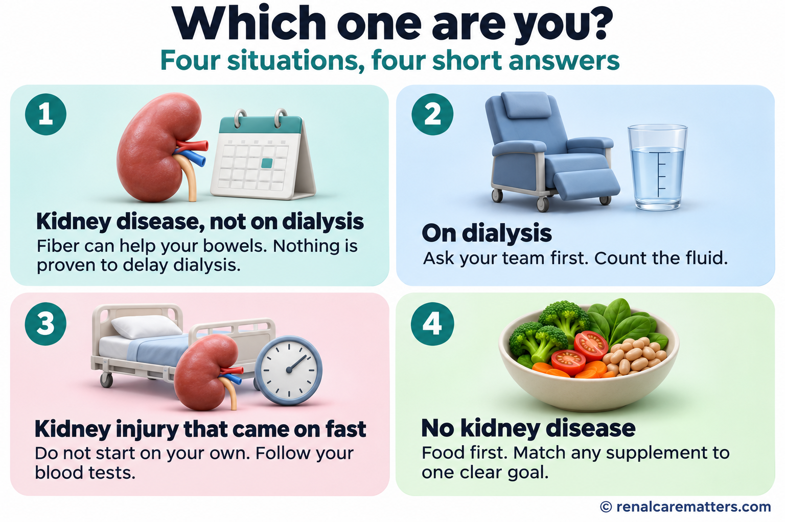
Four situations, four short answers. Find yours first, then read that part of the guide.Apat na sitwasyon, apat na maikling sagot. Hanapin muna ang sa inyo, saka basahin ang bahaging iyon ng gabay.Upat ka kahimtang, upat ka mubo nga tubag. Pangitaa una ang inyoha, unya basaha kanang bahina sa giya.Apat a sitwasyon, apat a makuyad a sagot. Panintunan yu pamu ing kekayu, kaibat basan ing parting ita ning gabay.
- CKD
- Chronic kidney disease
- AKI
- Acute kidney injury
Meet the productsKilalanin ang mga produktoIlha ang mga produktoKilalanan deng produktu
These words appear on labels as if they meant the same thing. They do not. Each names a different kind of product, with its own evidence.Lumalabas ang mga salitang ito sa label na parang pareho ang ibig sabihin. Hindi. Bawat isa ay ibang uri ng produkto, na may sariling ebidensya.Kining mga pulonga makita sa label nga murag parehas og kahulogan. Dili. Ang matag usa lahi nga klase sa produkto, nga adunay kaugalingong ebidensya.Deting amanu, lalto la king label a balamu pareu ing buri nang sabian. Ali. Ing balang metung, aliwa yang klasi ning produktu, a atin yang sariling ebidensya.
| Name on the labelPangalan sa labelNgalan sa labelLagyu king label | What it isAno itoUnsa kiniNanu ya iti | ExamplesMga halimbawaMga pananglitanAlimbawa |
|---|---|---|
| PrebioticPrebioticPrebioticPrebiotic | Food for helpful gut bacteria: a substance your own bacteria use that leads to a health benefit.Pagkain ng mabubuting bacteria sa bituka: sangkap na ginagamit ng sarili ninyong bacteria na nagdudulot ng benepisyo sa kalusugan.Pagkaon sa maayong bacteria sa tinai: sangkap nga gigamit sa inyong kaugalingong bacteria nga mohatag og kaayohan sa panglawas.Pamangan da reng mayap a bacteria king bituka: sangkap a gagamitan da reng sarili yung bacteria a magdalang benepisyu king kalusugan. | Inulin; resistant starch (also in green bananas, legumes, and cooked rice that has cooled)Inulin; resistant starch (nasa hilaw na saging, munggo at iba pang legumes, at kaning lumamig)Inulin; resistant starch (anaa sa hilaw nga saging, mga liso sama sa monggos, ug kan-on nga mibugnaw)Inulin; resistant starch (atiu king saguing a e pa malutu, balatung at aliwang legumes, at nasing mimarimla) |
| ProbioticProbioticProbioticProbiotic | Live microbes that, taken in a large enough amount, have a proven benefit.Buhay na mikrobyo na, kapag sapat ang dami, ay may napatunayang benepisyo.Buhi nga mikrobyo nga, kung igo ang gidaghanon, adunay napamatud-an nga kaayohan.Mabie a mikrobyu a, nung sapat ing dakal na, atin yang apatunayan a benepisyu. | Named strains of Lactobacillus, Bifidobacterium or SaccharomycesMga pinangalanang strain ng Lactobacillus, Bifidobacterium o SaccharomycesMga ginganlan nga strain sa Lactobacillus, Bifidobacterium o SaccharomycesDeng strain a atin lagyu ning Lactobacillus, Bifidobacterium o Saccharomyces |
| SynbioticSynbioticSynbioticSynbiotic | Live microbes plus the food they use, combined in one product.Buhay na mikrobyo at ang pagkaing ginagamit nila, pinagsama sa isang produkto.Buhi nga mikrobyo ug ang pagkaon nga ilang gigamit, gihiusa sa usa ka produkto.Mabie a mikrobyu ampo ing pamangan a gagamitan da, misasanmetung king metung a produktu. | A probiotic capsule that also contains inulin or another fiberProbiotic capsule na may kasamang inulin o ibang fiberProbiotic capsule nga adunay inulin o laing fiberProbiotic capsule a atin yang kayabeng inulin o aliwang fiber |
| PostbioticPostbioticPostbioticPostbiotic | Microbes that are no longer alive, or their parts, prepared so that they still give a benefit.Mga mikrobyong hindi na buhay, o mga bahagi nito, na inihanda upang magbigay pa rin ng benepisyo.Mga mikrobyo nga dili na buhi, o ilang mga bahin, nga giandam aron mohatag gihapon og kaayohan.Mikrobyung e na mabie, o deng parte da, a migsadia ba lang makapamie pa murin benepisyu. | Heat-treated bacterial preparationsMga paghahandang bacteria na pinainitanMga pag-andam sa bacteria nga gipainitanDeng bacteria a penapali |
| ButyrateButyrateButyrateButyrate | A short-chain fatty acid that bacteria make when they ferment fiber; also sold as a purified capsule. Human kidney evidence is very limited.Isang short-chain fatty acid na ginagawa ng bacteria kapag pina-ferment nila ang fiber; ibinebenta rin bilang purong capsule. Napakalimitado ng ebidensya sa bato ng tao.Usa ka short-chain fatty acid nga gihimo sa bacteria kung ilang i-ferment ang fiber; gibaligya usab isip purong capsule. Limitado kaayo ang ebidensya sa kidney sa tawo.Metung a short-chain fatty acid a gagawan da reng bacteria potang i-ferment de ing fiber; mapapisali ya murin antimong purung capsule. Limitadu yang masyadu ing ebidensya king batu ning tau. | Sodium butyrate capsulesSodium butyrate capsuleSodium butyrate capsuleSodium butyrate capsule |
| Fermented foodsMga fermented na pagkainMga fermented nga pagkaonFermented a pamangan | Foods made with the help of microbes. They are foods, not tested treatments, and not all still contain live microbes.Mga pagkaing ginawa sa tulong ng mikrobyo. Pagkain ito, hindi nasubok na gamutan, at hindi lahat ay may buhay pang mikrobyo.Mga pagkaon nga gihimo sa tabang sa mikrobyo. Pagkaon kini, dili nasulayan nga tambal, ug dili tanan aduna pay buhi nga mikrobyo.Pamangan a megawa king saup da reng mikrobyu. Pamangan la deti, e la mesubuk a panulu, at e la ngan atin pang mabie a mikrobyu. | Yogurt, kefir, kimchi, buro (many are high in salt)Yogurt, kefir, kimchi, buro (marami ang maalat)Yogurt, kefir, kimchi, buro (daghan ang parat)Yogurt, kefir, kimchi, buru (dakal la reng maasin) |
| Fiber supplementFiber supplementFiber supplementFiber supplement | Adds bulk and holds water in the stool. Not every fiber is a prebiotic.Nagdaragdag ng bulto at nagpapanatili ng tubig sa dumi. Hindi lahat ng fiber ay prebiotic.Makadugang og gidak-on ug mopabilin og tubig sa hugaw. Dili tanang fiber prebiotic.Magdagdag yang bultu at pepanatilian ne ing danum king dumi. E ngan fiber prebiotic. | Psyllium huskPsyllium huskPsyllium huskPsyllium husk |
One rule runs through all of them: the benefit belongs to the exact product that was tested. A result from one strain, at one dose, in one group of people does not transfer to a different brand.Iisang tuntunin ang sumasaklaw sa lahat: ang benepisyo ay para sa mismong produktong sinubok. Ang resulta ng isang strain, sa isang dosis, sa isang grupo ng tao ay hindi naililipat sa ibang brand.Usa ka lagda ang naglangkob sa tanan: ang kaayohan iya sa mismong produkto nga gisulayan. Ang resulta sa usa ka strain, sa usa ka dosis, sa usa ka grupo sa tawo dili mabalhin sa laing brand.Metung a tuntunan ing sasakup karela ngan: ing benepisyu, para ya king mismung produktung sinubuk. Ing resulta ning metung a strain, king metung a dosis, king metung a grupu da reng tau, e ya milipat king aliwang brand.
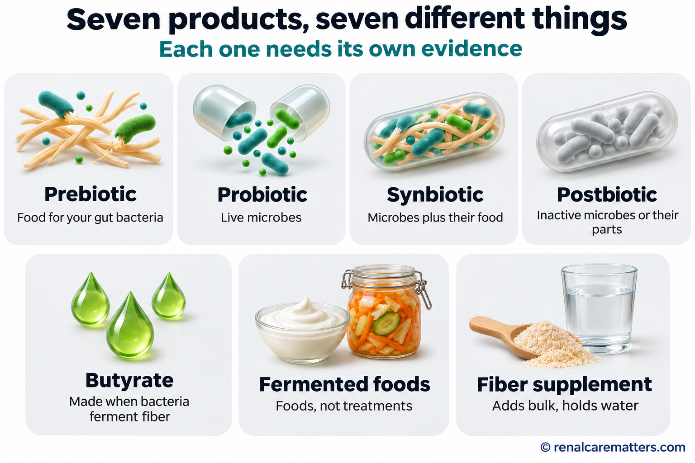
Seven kinds of gut-directed products. Each is a different thing, and each needs its own evidence.Pitong uri ng produktong para sa bituka. Magkakaiba ang bawat isa, at bawat isa ay nangangailangan ng sariling ebidensya.Pito ka klase sa produkto para sa tinai. Lahi ang matag usa, ug ang matag usa nagkinahanglan og kaugalingong ebidensya.Pitung klasi ning produktu para king bituka. Aliwa ya ing balang metung, at ing balang metung kailangan ne ing sarili nang ebidensya.
How your gut and kidneys talkPaano nag-uusap ang bituka at batoGiunsa pag-istoryahanay sa tinai ug kidneyMakananu lang mikakasabi ing bituka at batu
Think of your large intestine as a fermentation tank. Bacteria there work on whatever your small intestine did not absorb. From fiber they make short-chain fatty acids, which feed the cells lining the gut. From leftover protein they make compounds such as indole and p-cresol. Your liver converts these into indoxyl sulfate and p-cresyl sulfate, and healthy kidneys push them out into the urine.Isipin ang malaking bituka bilang tangke ng fermentation. Pinoproseso ng bacteria doon ang anumang hindi na-absorb ng maliit na bituka. Mula sa fiber, gumagawa sila ng short-chain fatty acids na pagkain ng mga cell na nakalinya sa bituka. Mula sa natirang protina, gumagawa sila ng mga compound gaya ng indole at p-cresol. Ginagawa itong indoxyl sulfate at p-cresyl sulfate ng atay, at inilalabas ng malusog na bato sa ihi.Hunahunaa ang dakong tinai isip tangke sa fermentation. Ang bacteria didto nagproseso sa bisan unsang wala ma-absorb sa gamay nga tinai. Gikan sa fiber, naghimo sila og short-chain fatty acids nga pagkaon sa mga cell nga naglinya sa tinai. Gikan sa nahabilin nga protina, naghimo sila og mga compound sama sa indole ug p-cresol. Himoon kini sa atay nga indoxyl sulfate ug p-cresyl sulfate, ug ipagawas sa himsog nga kidney ngadto sa ihi.Isipan me ing maragul a bituka antimong tangki ning fermentation. Deng bacteria karin, pruprosesu de ing nanu mang e na-absorb ning malating bituka. Ibat king fiber, gagawa lang short-chain fatty acids a pamangan da reng cell a makalinya king bituka. Ibat king mitagan a protina, gagawa lang compound antimo ing indole at p-cresol. Gagawan na lang indoxyl sulfate at p-cresyl sulfate ning ate, at ing malusug a batu, ilwal na la king imi.
When kidneys weaken, these compounds build up in the blood. The idea behind gut-directed supplements is simple: give the bacteria more fiber to work on, and they may make fewer of these compounds. Several small studies show that blood levels can fall.Kapag humina ang bato, naiipon ang mga compound na ito sa dugo. Simple ang ideya sa likod ng mga supplement para sa bituka: bigyan ng mas maraming fiber ang bacteria, at baka mas kaunti ang gawin nilang ganitong compound. Ipinapakita ng ilang maliliit na pag-aaral na puwedeng bumaba ang antas sa dugo.Kung moluya ang kidney, matigom kining mga compound sa dugo. Simple ang ideya luyo sa mga supplement para sa tinai: hatagi og dugang fiber ang bacteria, ug basin mas gamay ang ilang himoon niining mga compound. Gipakita sa pipila ka gagmay nga pagtuon nga mahimong moubos ang lebel sa dugo.Potang maina ya ing batu, mititipun la deting compound king daya. Simple ya ing ideya king gulut da reng supplement para king bituka: dinan lang mas dakal a fiber deng bacteria, at malyaring mas ditak ing gawan dang anti kareting compound. Papakit da reng mapilan a malating pamag-aral a malyari yang bumaba ing level king daya.
Here is the catch. A lower number on a lab report is an in-between result. It shows the product did something, not that it helped you. What matters is whether kidney function is kept, dialysis is delayed, and you feel well. For these supplements, that has not yet been shown.Narito ang dapat tandaan. Ang mas mababang numero sa lab report ay panggitnang resulta lamang. Ipinapakita nitong may ginawa ang produkto, hindi na nakatulong ito sa inyo. Ang mahalaga ay kung napapanatili ang paggana ng bato, naaantala ang dialysis, at maayos ang pakiramdam ninyo. Para sa mga supplement na ito, hindi pa iyon naipapakita.Ania ang angay hinumdoman. Ang mas ubos nga numero sa lab report usa lamang ka tunga-tunga nga resulta. Nagpakita kini nga adunay gibuhat ang produkto, dili nga nakatabang kini kaninyo. Ang importante mao kung napabilin ba ang pag-andar sa kidney, nalangan ba ang dialysis, ug maayo ba ang inyong gibati. Para niining mga supplement, wala pa kana mapakita.Oyni ing dapat tandanan. Ing mas mababang numeru king lab report, panggitnang resulta ya mu. Papakit na a atin yang gewa ing produktu, e ing sinaup ya keka. Ing importanti, nung apapanatili ya ing pamaggana ning batu, apapaliban ya ing dialysis, at mayap ing panamdaman mu. Para kareting supplement, e pa apakit ita.
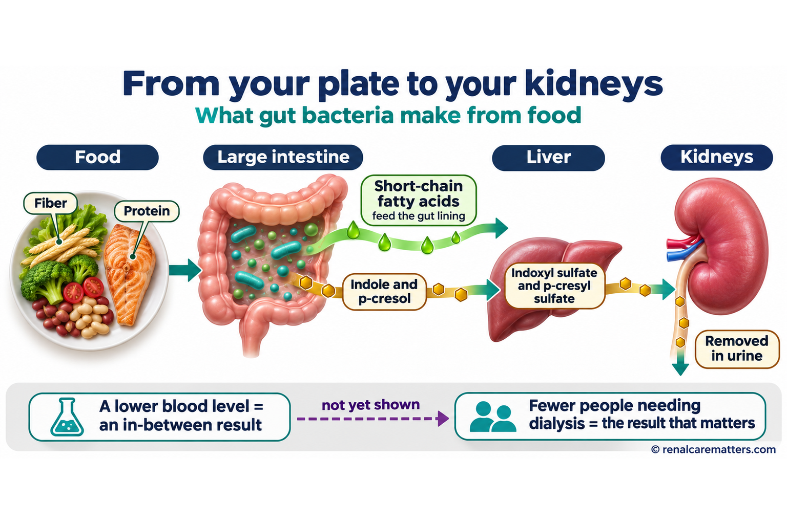
From plate to kidney: bacteria turn fiber into helpful short-chain fatty acids and leftover protein into waste compounds that the kidneys must clear.Mula plato hanggang bato: ginagawa ng bacteria ang fiber na kapaki-pakinabang na short-chain fatty acids, at ang natirang protina na mga duming kailangang alisin ng bato.Gikan sa plato ngadto sa kidney: himoon sa bacteria ang fiber nga mapuslanong short-chain fatty acids, ug ang nahabilin nga protina nga mga hugaw nga kinahanglang tangtangon sa kidney.Ibat king pinggan anggang batu: gagawan da reng bacteria ing fiber a makasaup a short-chain fatty acids, at ing mitagan a protina a dumi a kailangan nang ilako ning batu.
- SCFA
- Short-chain fatty acid
If you have CKD and are not on dialysisKung may CKD kayo at hindi nagda-dialysisKung adunay CKD ug wala mag-dialysisNung atin kang CKD at e ka magda-dialysis
Three studies tell most of the story. In 2026, 72 adults in Egypt with stage 3 to 4 CKD took one probiotic (Lactobacillus plantarum) or a look-alike capsule for six months. The estimated glomerular filtration rate (eGFR), a blood-test estimate of kidney function, rose in the probiotic group and slipped in the other. That is encouraging. It is also one small study at one hospital, it relied on creatinine alone, protein in the urine rose in both groups, and no one has repeated it yet.Tatlong pag-aaral ang nagsasabi ng karamihan ng kuwento. Noong 2026, 72 adult sa Egypt na may stage 3 hanggang 4 na CKD ang uminom ng isang probiotic (Lactobacillus plantarum) o kamukhang capsule sa loob ng anim na buwan. Ang estimated glomerular filtration rate (eGFR), isang tantiya ng paggana ng bato mula sa blood test, ay tumaas sa grupong probiotic at bahagyang bumaba sa kabila. Nakapagpapalakas-loob iyon. Pero isa lamang itong maliit na pag-aaral sa iisang ospital, creatinine lang ang ginamit, tumaas ang protina sa ihi sa parehong grupo, at wala pang umuulit nito.Tulo ka pagtuon ang nagsulti sa kadaghanan sa istorya. Niadtong 2026, 72 ka hamtong sa Egypt nga adunay stage 3 hangtod 4 nga CKD ang miinom og usa ka probiotic (Lactobacillus plantarum) o susamang capsule sulod sa unom ka bulan. Ang estimated glomerular filtration rate (eGFR), usa ka banabana sa pag-andar sa kidney gikan sa blood test, misaka sa grupong probiotic ug miubos gamay sa pikas. Makadasig kana. Apan usa ra kini ka gamay nga pagtuon sa usa ka ospital, creatinine ra ang gigamit, misaka ang protina sa ihi sa duha ka grupo, ug wala pay misubli niini.Atlung pamag-aral ing sasabi king keraklan ning kuwentu. Inyang 2026, 72 a adult king Egypt a ating stage 3 anggang 4 a CKD, minum lang metung a probiotic (Lactobacillus plantarum) o kalupa nang capsule kilub ning anam a bulan. Ing estimated glomerular filtration rate (eGFR), metung a tantya ning pamaggana ning batu ibat king blood test, minukyat ya king grupung probiotic at mibaba yang ditak king kabilan. Makapasikan lub ita. Dapot metung ya mung malating pamag-aral king metung a ospital, creatinine mu ing gewa da, minukyat ya ing protina king imi king adwang grupu, at ala pang minulit kaniti.
An Australian study that ran for 12 months tested a different product, a synbiotic, and found the kidney estimate was slightly lower in the people who took it. A United States study of resistant starch lowered one waste compound over 16 weeks but did not measure kidney outcomes. Different products, different results. That is why no brand can borrow another product’s evidence.Isang pag-aaral sa Australia na tumagal ng 12 buwan ang sumubok ng ibang produkto, isang synbiotic, at nakitang bahagyang mas mababa ang tantiya ng bato sa mga uminom nito. Isang pag-aaral sa Estados Unidos ng resistant starch ang nagpababa ng isang dumi sa loob ng 16 na linggo pero hindi sumukat ng kinalabasan sa bato. Magkaibang produkto, magkaibang resulta. Kaya walang brand na puwedeng humiram ng ebidensya ng ibang produkto.Usa ka pagtuon sa Australia nga milungtad og 12 ka bulan ang misulay og laing produkto, usa ka synbiotic, ug nakita nga gamay nga mas ubos ang banabana sa kidney sa mga miinom niini. Usa ka pagtuon sa Estados Unidos sa resistant starch ang nagpaubos og usa ka hugaw sulod sa 16 ka semana apan wala magsukod og sangpotanan sa kidney. Lahi nga produkto, lahi nga resulta. Mao nga walay brand nga makahulam sa ebidensya sa laing produkto.Metung a pamag-aral king Australia a mekad 12 bulan, sinubuk yang aliwang produktu, metung a synbiotic, at ikit da a mas mababa yang ditak ing tantya ning batu kareng minum kaniti. Metung a pamag-aral king United States king resistant starch, pepababa ne ing metung a dumi kilub ning 16 a duminggu dapot e ne sinukat ing kalalabasan king batu. Aliwang produktu, aliwang resulta. Uli na niti, alang brand a malyaring mandam king ebidensya ning aliwang produktu.
What is reasonable todayAno ang makatwiran ngayonUnsa ang makatarunganon karonNanu ing makatuliran ngeni
Use fiber for a clear purpose: softer, more regular stools or a healthier eating pattern. Add it slowly over one to two weeks, and ask about potassium, phosphate additives and any fluid limit. Keep the treatments already proven to protect kidneys: blood pressure and blood sugar control and the kidney-protective medicines your doctor prescribed.Gamitin ang fiber para sa malinaw na layunin: mas malambot at mas regular na pagdumi o mas malusog na pagkain. Idagdag ito nang dahan-dahan sa loob ng isa hanggang dalawang linggo, at itanong ang tungkol sa potassium, phosphate additives at anumang limitasyon sa tubig. Ipagpatuloy ang mga gamutang napatunayan nang nagpoprotekta sa bato: kontrol sa presyon at asukal sa dugo at ang mga gamot na inireseta ng inyong doktor.Gamita ang fiber para sa klaro nga tumong: mas humok ug mas regular nga pagkalibang o mas himsog nga pagkaon. Idugang kini hinay-hinay sulod sa usa hangtod duha ka semana, ug pangutana bahin sa potassium, phosphate additives ug bisan unsang limitasyon sa tubig. Ipadayon ang mga pagtambal nga napamatud-an na nga nanalipod sa kidney: kontrol sa presyon ug asukal sa dugo ug ang mga tambal nga gireseta sa inyong doktor.Gamitan me ing fiber para king malino a layunin: mas malambut at mas regular a pamandumi o mas malusug a pamamangan. Idagdag me dahan-dahan kilub ning metung anggang adwang duminggu, at ikutang me ing tungkul king potassium, phosphate additives at nanu mang limitasyon king danum. Isundu mu la deng panulung apatunayan nang proteksyunan de ing batu: kontrol king presyon at asukal king daya ampo deng gamut a irereseta ning doktor mu.
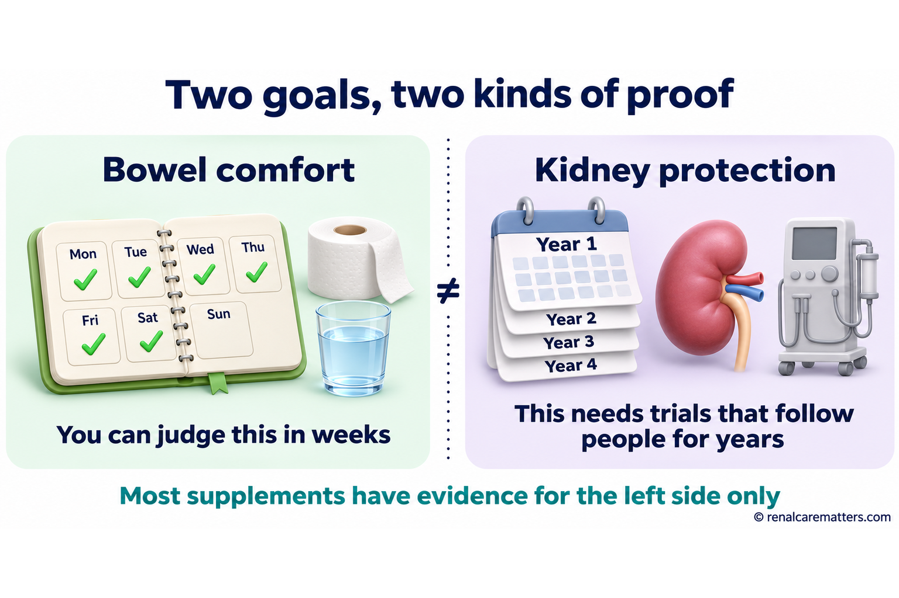
Two goals, two kinds of proof. Bowel comfort can be judged in weeks. Kidney protection needs trials that follow people for years.Dalawang layunin, dalawang uri ng patunay. Mahuhusgahan ang ginhawa sa pagdumi sa loob ng ilang linggo. Ang proteksyon sa bato ay nangangailangan ng mga pag-aaral na sumusubaybay sa mga tao nang ilang taon.Duha ka tumong, duha ka klase sa pamatuod. Ang kahupayan sa pagkalibang mahukman sulod sa pipila ka semana. Ang pagpanalipod sa kidney nagkinahanglan og mga pagtuon nga nagsunod sa mga tawo sulod sa mga tuig.Adwang layunin, adwang klasi ning patune. Ing ginawa king pamandumi, ausga me kilub ning mapilan a duminggu. Ing proteksyon king batu, kailangan na reng pamag-aral a tutukian da reng tau kilub ning mapilan a banwa.
If you are on hemodialysis or peritoneal dialysisKung kayo ay naka-hemodialysis o peritoneal dialysisKung kamo naka-hemodialysis o peritoneal dialysisNung maka-hemodialysis o peritoneal dialysis ka
Hemodialysis (HD) and peritoneal dialysis (PD) are studied separately from earlier CKD, and the trials are small. They mostly report changes in blood markers such as urea, signs of inflammation, or nutrition measures. None has shown fewer hospital stays, a longer life, or better protection of whatever kidney function remains. Evidence in PD is especially thin.Hiwalay na pinag-aaralan ang hemodialysis (HD) at peritoneal dialysis (PD) mula sa mas maagang CKD, at maliliit ang mga pag-aaral. Karamihan ay nag-uulat ng pagbabago sa mga marker sa dugo gaya ng urea, palatandaan ng pamamaga (inflammation), o sukat ng nutrisyon. Wala pang nagpakita ng mas kaunting pagka-ospital, mas mahabang buhay, o mas mahusay na proteksyon sa natitirang paggana ng bato. Lalo pang manipis ang ebidensya sa PD.Ang hemodialysis (HD) ug peritoneal dialysis (PD) gilain pagtuon gikan sa mas sayo nga CKD, ug gagmay ang mga pagtuon. Kadaghanan nagtaho og kausaban sa mga marker sa dugo sama sa urea, timailhan sa inflammation, o sukod sa nutrisyon. Wala pay nagpakita og mas gamay nga pagka-ospital, mas taas nga kinabuhi, o mas maayong pagpanalipod sa nahabilin nga pag-andar sa kidney. Mas nipis pa ang ebidensya sa PD.Ing hemodialysis (HD) at peritoneal dialysis (PD), pag-aralan dong makabukud king mas maranun a CKD, at malati la reng pamag-aral. Keraklan, i-report da ing pamagbayu kareng marker king daya antimo ing urea, tanda ning inflammation, o sukat ning nutrisyon. Ala pang pepakit king mas ditak a pangaospital, mas makabang bie, o mas mayap a proteksyon king mitagan a pamaggana ning batu. Mas manipis ya pa ing ebidensya king PD.
Constipation, however, is common on dialysis and worth treating. Fluid limits, phosphate binders, iron tablets and less activity all slow the bowel. Ask your team which fiber or laxative suits you. Magnesium-based laxatives can build up in the body when the kidneys do not work. In PD, regular bowel movements also help the catheter drain well.Gayunman, karaniwan ang constipation sa dialysis at sulit itong gamutin. Pinababagal ng limitasyon sa tubig, phosphate binders, iron tablets at kakulangan sa galaw ang bituka. Itanong sa inyong team kung anong fiber o laxative ang bagay sa inyo. Maaaring maipon sa katawan ang mga laxative na may magnesium kapag hindi gumagana ang bato. Sa PD, nakakatulong din ang regular na pagdumi para maayos ang daloy ng catheter.Bisan pa niana, kasagaran ang constipation sa dialysis ug angay kining tambalan. Ang limitasyon sa tubig, phosphate binders, iron tablets ug kakulang sa lihok makapahinay sa tinai. Pangutan-a ang inyong team kung unsang fiber o laxative ang angay kaninyo. Ang mga laxative nga adunay magnesium mahimong matigom sa lawas kung dili molihok ang kidney. Sa PD, ang regular nga pagkalibang makatabang usab aron maayo ang agas sa catheter.Makanian man, karaniwan ya ing constipation king dialysis at dapat yang ulunan. Ing limitasyon king danum, phosphate binders, iron tablets at kakulangan king galo, papabagalan de ing bituka. Ikutang yu king team yu nung nanung fiber o laxative ing bage kekayu. Deng laxative a ating magnesium, malyari lang mitipun king katawan potang e gagana ing batu. King PD, makasaup ya murin ing regular a pamandumi ba yang mayap ing agus ning catheter.
- Count the water. A powder mixed in a glass of water uses part of your daily fluid allowance.Bilangin ang tubig. Ang powder na tinimpla sa isang basong tubig ay kabawasan sa inyong pang-araw-araw na limitasyon sa tubig.Ihapa ang tubig. Ang powder nga gisagol sa usa ka basong tubig bahin sa inyong inadlaw nga limitasyon sa tubig.Bilangan me ing danum. Ing powder a tinimpla king metung a basung danum, kayabe ya king limitasyon mu king danum aldo-aldo.
- Read the ingredients. Look for potassium, sodium, and any word containing “phos” (a phosphate additive).Basahin ang sangkap. Hanapin ang potassium, sodium, at anumang salitang may “phos” (phosphate additive).Basaha ang mga sangkap. Pangitaa ang potassium, sodium, ug bisan unsang pulong nga adunay “phos” (phosphate additive).Basan mu la reng sangkap. Panintunan me ing potassium, sodium, at nanu mang amanung ating “phos” (phosphate additive).
- Show the label to your dialysis nurse, dietitian or doctor before the first dose.Ipakita ang label sa inyong dialysis nurse, dietitian o doktor bago ang unang inom.Ipakita ang label sa inyong dialysis nurse, dietitian o doktor sa dili pa ang unang inom.Ipakit me ing label king dialysis nurse, dietitian o doktor mu bayu ing mumunang inum.
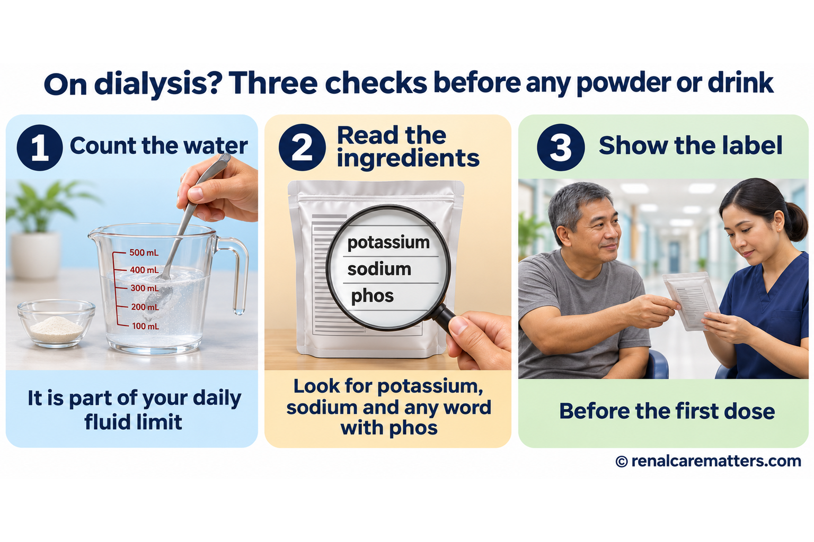
Three checks before starting any powder or drink on dialysis: count the water, read the ingredients, show the label.Tatlong pagsusuri bago magsimula ng anumang powder o inumin kung nagda-dialysis: bilangin ang tubig, basahin ang sangkap, ipakita ang label.Tulo ka pagsusi sa dili pa mosugod og bisan unsang powder o ilimnon kung nag-dialysis: ihapa ang tubig, basaha ang sangkap, ipakita ang label.Atlung pamanyuri bayu magmumpisang nanu mang powder o inuman nung magda-dialysis: bilangan ing danum, basan deng sangkap, ipakit ing label.
During and after acute kidney injuryHabang may at pagkatapos ng acute kidney injurySamtang ug human sa acute kidney injuryKabang atin at kaibat ning acute kidney injury
In acute kidney injury (AKI), the kidneys lose function over hours to days, often during a serious illness. In a 2023 trial of 92 adults whose AKI came from sepsis (a severe infection), a seven-day probiotic did not improve kidney recovery compared with a look-alike product.Sa acute kidney injury (AKI), humihina ang bato sa loob ng ilang oras hanggang araw, kadalasan habang may malubhang sakit. Sa isang pag-aaral noong 2023 ng 92 adult na ang AKI ay mula sa sepsis (malubhang impeksyon), hindi napabuti ng pitong araw na probiotic ang paggaling ng bato kumpara sa kamukhang produkto.Sa acute kidney injury (AKI), moluya ang kidney sulod sa pipila ka oras hangtod adlaw, kasagaran samtang adunay grabe nga sakit. Sa usa ka pagtuon niadtong 2023 sa 92 ka hamtong kansang AKI gikan sa sepsis (grabe nga impeksyon), ang pito ka adlaw nga probiotic wala makapaayo sa pagkaayo sa kidney kon itandi sa susamang produkto.King acute kidney injury (AKI), maina ya ing batu kilub ning mapilan a oras anggang aldo, keraklan kabang atin malalang sakit. King metung a pamag-aral inyang 2023 kareng 92 a adult a ing AKI da ibat ya king sepsis (malalang impeksyon), ing pitung aldo a probiotic e ne pepayap ing pamangayap ning batu nung ikumpara king kalupa nang produktu.
People who are very ill, on a breathing machine, or with tubes in large veins are also the group in whom bacteria from a probiotic have, on rare occasions, been found in the blood. So this is not the time to start a supplement on your own. After AKI, what helps most is follow-up: repeat creatinine and urine tests, a review of your medicines, and blood pressure checks.Ang mga taong malubha ang sakit, naka-breathing machine, o may tubo sa malalaking ugat ay sila ring grupo kung saan, sa bihirang pagkakataon, may nakitang bacteria mula sa probiotic sa dugo. Kaya hindi ito ang panahon para magsimula ng supplement nang mag-isa. Pagkatapos ng AKI, ang pinakanakakatulong ay ang follow-up: ulit na creatinine at urine test, pagrepaso ng mga gamot, at pagsukat ng presyon.Ang mga tawo nga grabe ang sakit, naka-breathing machine, o adunay tubo sa dagkong ugat mao usab ang grupo diin, sa talagsa nga higayon, nakit-an ang bacteria gikan sa probiotic sa dugo. Busa dili kini ang panahon sa pagsugod og supplement sa kaugalingon. Human sa AKI, ang labing makatabang mao ang follow-up: balik nga creatinine ug urine test, pagrepaso sa mga tambal, ug pagsukod sa presyon.Deng tau a masakit a masyadu, maka-breathing machine, o ating tubu kareng maragul a uyat, ila murin ing grupu nung nu, king bihirang pamikatagun, ating ikit a bacteria ibat king probiotic king daya. Kaya e iti ing panaun para magmumpisang supplement a dili mu. Kaibat ning AKI, ing pekamakasaup ya ing follow-up: ulit a creatinine at urine test, pamag-repasu kareng gamut, at pamanyukat king presyon.
eGFR is not reliable while AKI is still changingHindi maaasahan ang eGFR habang nagbabago pa ang AKIDili kasaligan ang eGFR samtang nag-usab pa ang AKIE ya apagkatiwalan ing eGFR kabang mababayu ya pa ing AKI
The eGFR formula assumes your creatinine is steady. While creatinine is still rising or falling, your team follows the creatinine trend and your urine output instead. A change in one blood test should never be credited to, or blamed on, a supplement.Ipinapalagay ng pormula ng eGFR na hindi nagbabago ang inyong creatinine. Habang tumataas o bumababa pa ito, ang sinusundan ng inyong team ay ang takbo ng creatinine at dami ng ihi. Ang pagbabago sa iisang blood test ay hindi dapat ituring na dahil sa, o kasalanan ng, isang supplement.Ang pormula sa eGFR nagdahom nga makanunayon ang inyong creatinine. Samtang nagsaka o nag-ubos pa kini, ang gisunod sa inyong team mao ang dagan sa creatinine ug gidaghanon sa ihi. Ang kausaban sa usa ka blood test dili angay isipon nga tungod sa, o sala sa, usa ka supplement.Ing pormula ning eGFR, isipan na a e mababayu ing creatinine mu. Kabang mumukyat o bababa ya pa, ing tutukian ning team mu ya ing takbu ning creatinine at dakal ning imi. Ing pamagbayu king metung a blood test, e dapat ibilang a uli ning, o kasalanan ning, metung a supplement.
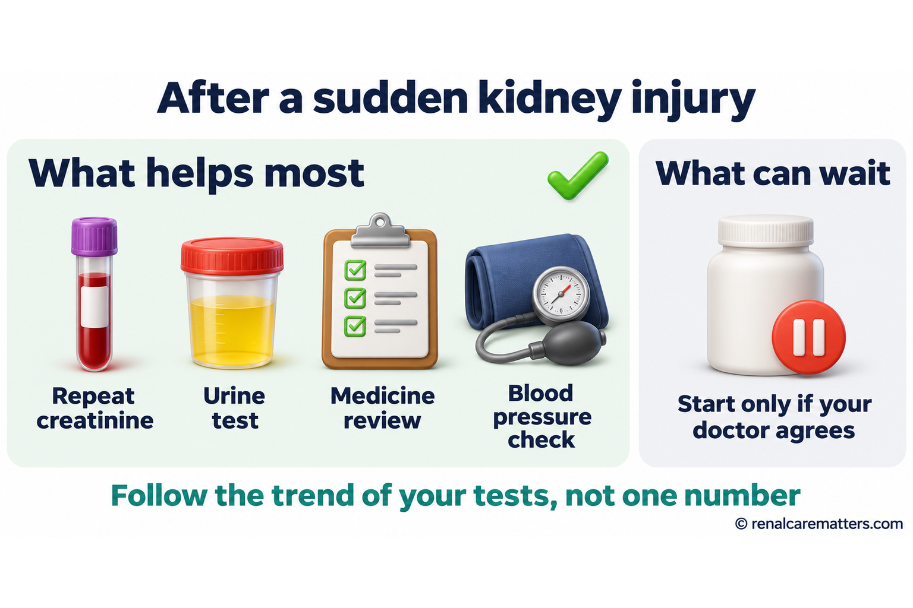
After acute kidney injury, follow-up tests, a medicine review and blood pressure checks come first. A new supplement can wait until your doctor agrees.Pagkatapos ng acute kidney injury, nauuna ang mga follow-up na test, pagrepaso ng gamot at pagsukat ng presyon. Makapaghihintay ang bagong supplement hanggang pumayag ang inyong doktor.Human sa acute kidney injury, mag-una ang mga follow-up nga test, pagrepaso sa tambal ug pagsukod sa presyon. Makahulat ang bag-ong supplement hangtod mouyon ang inyong doktor.Kaibat ning acute kidney injury, mumuna la reng follow-up a test, pamag-repasu kareng gamut at pamanyukat king presyon. Makapanenaya ya ing bayung supplement anggang pumayag ya ing doktor mu.
- AKI
- Acute kidney injury
If you do not have kidney diseaseKung wala kayong sakit sa batoKung wala kamoy sakit sa kidneyNung ala kang sakit king batu
For general wellnessPara sa pangkalahatang kalusuganPara sa kinatibuk-ang panglawasPara king pangkabilugan a kalusugan
No supplement has been shown to prevent kidney disease in healthy people. In studies of healthy adults, probiotics did not consistently change the mix of bacteria in the stool. Food comes first: vegetables, fruit, legumes such as monggo, and whole grains feed your own bacteria every day.Wala pang supplement na napatunayang pumipigil sa sakit sa bato sa malulusog na tao. Sa mga pag-aaral ng malulusog na adult, hindi palagiang nabago ng probiotic ang halo ng bacteria sa dumi. Pagkain muna: gulay, prutas, legumes gaya ng munggo, at whole grains ang nagpapakain sa sarili ninyong bacteria araw-araw.Wala pay supplement nga napamatud-an nga makapugong sa sakit sa kidney sa himsog nga mga tawo. Sa mga pagtuon sa himsog nga hamtong, ang probiotic wala kanunay makausab sa sagol sa bacteria sa hugaw. Pagkaon una: utanon, prutas, mga liso sama sa monggos, ug whole grains ang nagpakaon sa inyong kaugalingong bacteria kada adlaw.Ala pang supplement a apatunayan a makasabat king sakit king batu kareng malusug a tau. Kareng pamag-aral kareng malusug a adult, e ne parating binayu ning probiotic ing alu da reng bacteria king dumi. Pamangan pamu: gule, prutas, legumes antimo ing balatung, at whole grains ing papakan kareng sarili yung bacteria aldo-aldo.
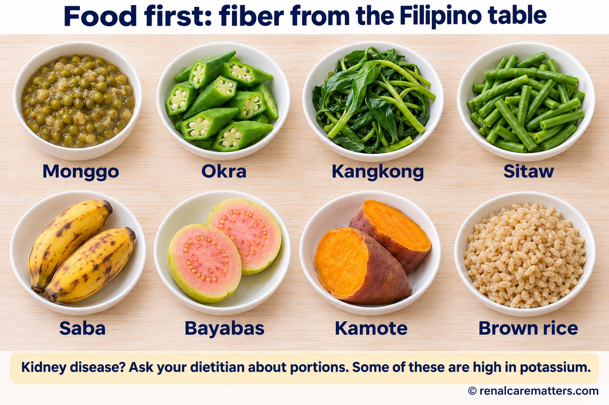
Food first. Fiber-rich Filipino foods feed your own gut bacteria. If you have kidney disease, ask your dietitian about portions, because several of these are also high in potassium.Pagkain muna. Ang mga pagkaing Pilipino na mayaman sa fiber ang nagpapakain sa sarili ninyong bacteria sa bituka. Kung may sakit kayo sa bato, itanong sa dietitian ang tamang dami, dahil ilan sa mga ito ay mataas din sa potassium.Pagkaon una. Ang mga pagkaong Pilipino nga daghag fiber ang nagpakaon sa inyong kaugalingong bacteria sa tinai. Kung aduna kamoy sakit sa kidney, pangutan-a ang dietitian sa hustong gidaghanon, kay pipila niini taas usab og potassium.Pamangan pamu. Deng pamangan Pilipinu a dakal fiber, papakan da la reng sarili yung bacteria king bituka. Nung atin kang sakit king batu, ikutang me king dietitian ing ustung dakal, uling mapilan kareti matas la murin king potassium.
For constipationPara sa constipationPara sa constipationPara king constipation
Among fiber supplements, psyllium has the best evidence, and United States gastroenterology guidelines suggest fiber as a first step. Drink enough fluid with it and expect some gas at first. Its benefit is bowel comfort. It is not proof of kidney protection.Sa mga fiber supplement, psyllium ang may pinakamahusay na ebidensya, at iminumungkahi ng mga gastroenterology guideline sa Estados Unidos ang fiber bilang unang hakbang. Uminom ng sapat na tubig kasabay nito at asahan ang kaunting kabag sa simula. Ang benepisyo nito ay ginhawa sa pagdumi. Hindi ito patunay ng proteksyon sa bato.Sa mga fiber supplement, psyllium ang adunay labing maayong ebidensya, ug gisugyot sa mga gastroenterology guideline sa Estados Unidos ang fiber isip unang lakang. Pag-inom og igong tubig uban niini ug paabota ang gamay nga panuhot sa sinugdan. Ang kaayohan niini mao ang kahupayan sa pagkalibang. Dili kini pamatuod sa pagpanalipod sa kidney.Kareng fiber supplement, psyllium ing ating pekamayap a ebidensya, at isusuggest da reng gastroenterology guideline king United States ing fiber antimong mumunang akbang. Minum kang sapat a danum kayabe na at asahan me ing ditak a kabag king umpisa. Ing benepisyu na, ginawa king pamandumi. E ya patune ning proteksyon king batu.
While taking antibioticsHabang umiinom ng antibioticSamtang nag-inom og antibioticKabang miminum antibiotic
Pooled trials suggest that certain probiotics lower the chance of diarrhea caused by the germ Clostridioides difficile, from about 32 to about 16 in every 1,000 people taking antibiotics. Expert groups disagree on whether to recommend them, because the benefit is small when your starting risk is low and the tested products differ. If you already have severe or bloody diarrhea, that needs testing and treatment, not a supplement.Ipinapahiwatig ng pinagsamang mga pag-aaral na may ilang probiotic na nagpapababa ng tsansa ng pagtataeng dulot ng mikrobyong Clostridioides difficile, mula humigit-kumulang 32 pababa sa 16 sa bawat 1,000 taong umiinom ng antibiotic. Hindi nagkakasundo ang mga grupo ng eksperto kung irerekomenda ito, dahil maliit ang benepisyo kapag mababa ang panimulang panganib at magkakaiba ang mga produktong sinubok. Kung mayroon na kayong malubha o may dugong pagtatae, kailangan iyan ng pagsusuri at gamutan, hindi supplement.Ang gihiusang mga pagtuon nagsugyot nga pipila ka probiotic makapaubos sa tsansa sa kalibanga tungod sa kagaw nga Clostridioides difficile, gikan sa mga 32 ngadto sa mga 16 sa matag 1,000 ka tawo nga nag-inom og antibiotic. Ang mga grupo sa eksperto wala magkauyon kung irekomenda ba kini, kay gamay ang kaayohan kung ubos ang sinugdanang risgo ug lahi-lahi ang mga produktong gisulayan. Kung aduna na kamoy grabe o dugoong kalibanga, nagkinahanglan kana og pagsusi ug pagtambal, dili supplement.Deng misasanmetung a pamag-aral, papakit da a ating mapilan a probiotic a papababa king tsansa ning pamagtae uli ning mikrobyung Clostridioides difficile, ibat king mga 32 anggang mga 16 king balang 1,000 a tau a miminum antibiotic. E la mikakasundu deng grupu da reng eksperto nung irekomenda de, uling malati ya ing benepisyu potang mababa ya ing panimulang panganib at aliwa-liwa la reng produktung sinubuk. Nung atin na kang malala o ating dayang pamagtae, kailangan na ita ing pamanyuri at panulu, e supplement.
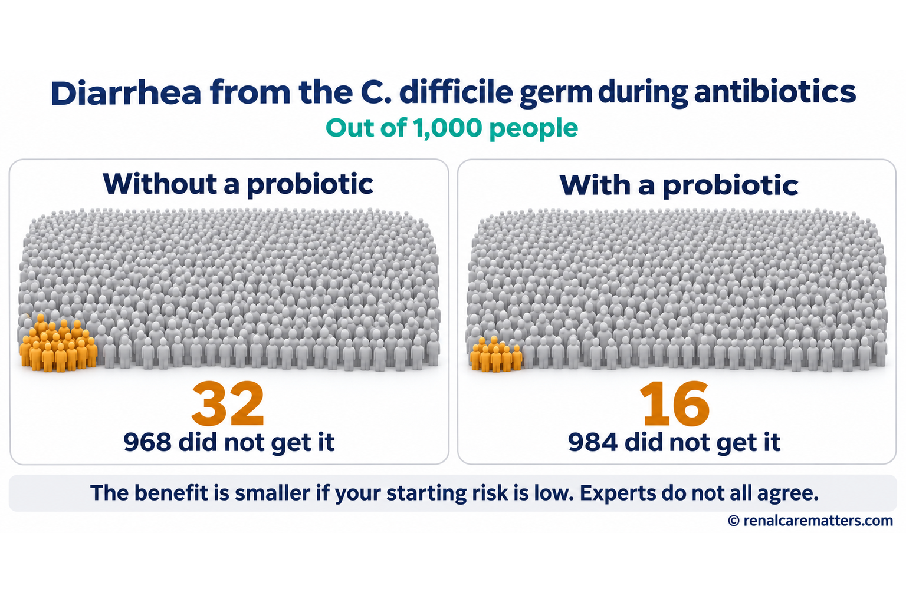
Out of 1,000 people taking antibiotics, about 32 got this type of diarrhea without a probiotic and about 16 with one. Most people do not get it either way.Sa 1,000 taong umiinom ng antibiotic, humigit-kumulang 32 ang nagkaroon ng ganitong pagtatae nang walang probiotic at mga 16 kapag mayroon. Karamihan ay hindi nagkakaroon nito alinman ang piliin.Sa 1,000 ka tawo nga nag-inom og antibiotic, mga 32 ang nakaangkon niining klase sa kalibanga nga walay probiotic ug mga 16 kung aduna. Kadaghanan dili makaangkon niini bisan asa ang pilion.King 1,000 a tau a miminum antibiotic, mga 32 ing mekad kaniting klasi ning pamagtae nung alang probiotic at mga 16 nung atin. Keraklan e la mikakaatin kaniti nanu man ing pilinan.
How to read a Philippine supplement labelPaano basahin ang label ng supplement sa PilipinasUnsaon pagbasa sa label sa supplement sa PilipinasMakananu yang basan ing label ning supplement king Pilipinas
In the Philippines, probiotics and fiber powders are usually sold as food supplements, not as medicines. Before you buy, walk through the label with these seven checks.Sa Pilipinas, karaniwang ibinebenta ang probiotic at fiber powder bilang food supplement, hindi bilang gamot. Bago bumili, suriin ang label gamit ang pitong hakbang na ito.Sa Pilipinas, ang probiotic ug fiber powder kasagarang gibaligya isip food supplement, dili isip tambal. Sa dili pa mopalit, susiha ang label gamit kining pito ka lakang.King Pilipinas, ing probiotic at fiber powder, karaniwan lang mapapisali antimong food supplement, e antimong gamut. Bayu ka sumali, lawan me ing label gamit deting pitung akbang.
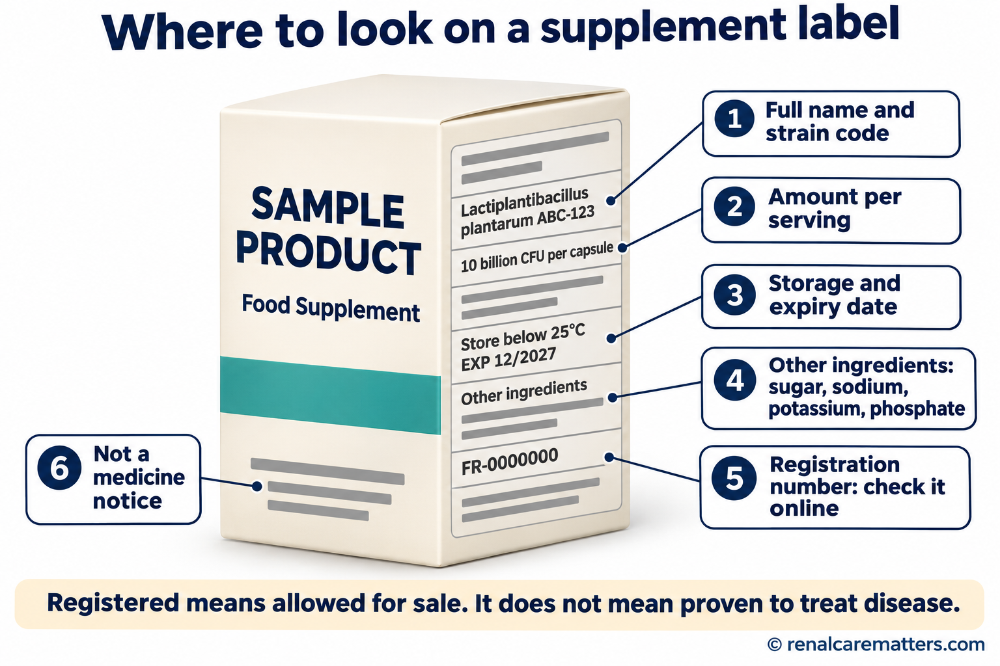
A made-up label showing where to look. No real brand is shown, and a registration number does not prove that a product treats disease.Isang gawa-gawang label na nagpapakita kung saan titingin. Walang totoong brand na ipinakikita, at ang registration number ay hindi patunay na nakagagamot ng sakit ang produkto.Usa ka hinimo-himong label nga nagpakita kung asa motan-aw. Walay tinuod nga brand nga gipakita, ug ang registration number dili pamatuod nga makatambal og sakit ang produkto.Metung a gawa-gawang label a papakit nung nukarin ka lawe. Alang tutung brand a papakit, at ing registration number e ya patune a makaulu yang sakit ing produktu.
- CFU
- Colony-forming unit
- FDA
- Food and Drug Administration (Philippines)
What to bring to your next visitAno ang dadalhin sa susunod na konsultaUnsa ang dad-on sa sunod nga konsultaNanu ing dalan king tutuking konsulta
A short, prepared conversation is the safest way to decide. Bring the product or a photo of every side of its label, and be ready to say what you hope it will do.Ang maikli at handang pag-uusap ang pinakaligtas na paraan ng pagpapasya. Dalhin ang produkto o litrato ng bawat gilid ng label nito, at ihanda kung ano ang inaasahan ninyong gagawin nito.Ang mubo ug andam nga panag-istorya mao ang labing luwas nga paagi sa pagdesisyon. Dad-a ang produkto o litrato sa matag kilid sa label niini, ug andama kung unsa ang inyong gilauman nga buhaton niini.Ing makuyad at makasadiang pamisabi-sabi ya ing pekaligtas a paralan para mag-desisyon. Dalan me ing produktu o litratu ning balang gilid ning label na, at isadia me nung nanu ing asahan mung gawan na.
- My goal: softer stools, fewer days without a bowel movement, or protection during antibiotics.Ang layunin ko: mas malambot na dumi, mas kaunting araw na walang pagdumi, o proteksyon habang nag-a-antibiotic.Akong tumong: mas humok nga hugaw, mas gamay nga adlaw nga walay pagkalibang, o proteksyon samtang nag-antibiotic.Ing layunin ku: mas malambut a dumi, mas ditak a aldo a alang pamandumi, o proteksyon kabang mag-antibiotic.
- My kidney stage or dialysis type, my fluid allowance, and my last potassium and phosphorus results.Ang stage ng aking bato o uri ng dialysis, ang limitasyon ko sa tubig, at ang huling resulta ng potassium at phosphorus.Ang stage sa akong kidney o klase sa dialysis, akong limitasyon sa tubig, ug ang kataposang resulta sa potassium ug phosphorus.Ing stage ning batu ku o klasi ning dialysis, ing limitasyon ku king danum, at ing tauling resulta ning potassium at phosphorus.
- Every medicine and supplement I take, including laxatives, phosphate binders and iron.Lahat ng gamot at supplement na iniinom ko, kasama ang laxative, phosphate binders at iron.Tanang tambal ug supplement nga akong giinom, lakip ang laxative, phosphate binders ug iron.Deng anggang gamut at supplement a iinuman ku, kayabe ing laxative, phosphate binders at iron.
- A one- to two-week diary of bowel movements, bloating and how much fiber I eat. The tracker linked at the end of this guide can total it for you.Talaan ng isa hanggang dalawang linggo ng pagdumi, kabag at kung gaano karaming fiber ang kinakain ko. Kayang kuwentahin ito ng tracker na naka-link sa dulo ng gabay na ito.Talaan sa usa hangtod duha ka semana sa pagkalibang, panuhot ug kung pila ka fiber ang akong gikaon. Ang tracker nga naka-link sa kataposan niining giya makasuma niini.Talaan ning metung anggang adwang duminggu ning pamandumi, kabag at nung makananu karakal a fiber ing kakanan ku. Ing tracker a maka-link king wakas ning gabay a iti, agyu neng kuwentan.
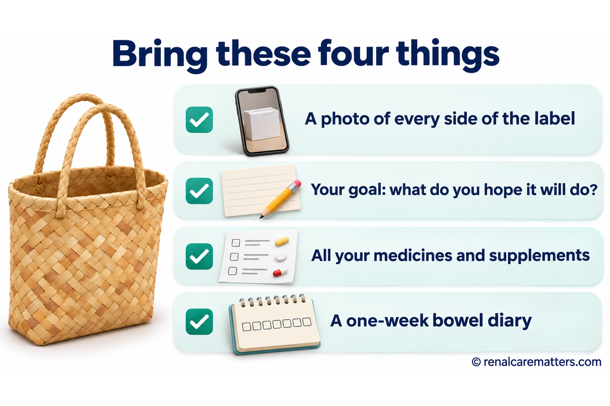
Four things to bring: a photo of the label, your goal, your medicine list, and a short bowel diary.Apat na dadalhin: litrato ng label, ang inyong layunin, listahan ng gamot, at maikling talaan ng pagdumi.Upat ka dad-on: litrato sa label, inyong tumong, listahan sa tambal, ug mubo nga talaan sa pagkalibang.Apat a dalan: litratu ning label, ing layunin mu, listahan da reng gamut, at makuyad a talaan ning pamandumi.
Common questionsMga karaniwang tanongKasagarang mga pangutanaKaraniwang kutang
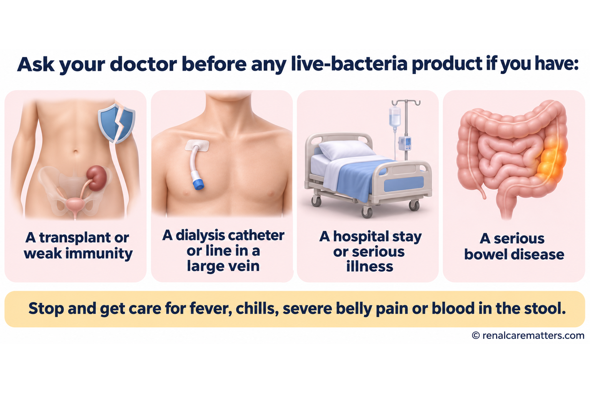
Ask your doctor first if you have a transplant or weak immunity, a dialysis catheter or other line in a large vein, are in hospital or very ill, or have a serious bowel disease.Magtanong muna sa doktor kung kayo ay may transplant o mahinang resistensya, may dialysis catheter o ibang tubo sa malaking ugat, nasa ospital o malubha ang sakit, o may malalang sakit sa bituka.Pangutana una sa doktor kung kamo adunay transplant o luya nga resistensya, adunay dialysis catheter o laing tubo sa dakong ugat, naa sa ospital o grabe ang sakit, o adunay grabe nga sakit sa tinai.Mangutang ka pamu king doktor nung atin kang transplant o maina ing resistensya, atin kang dialysis catheter o aliwang tubu king maragul a uyat, atiu ka king ospital o masakit kang masyadu, o atin kang malalang sakit king bituka.
Prescribe for a defined goal, not for a kidney promise
Prebiotics, probiotics, synbiotics and postbiotics are marketed to people with kidney disease on the strength of the gut–kidney axis. The physiology is real: colonic bacteria generate the precursors of indoxyl sulfate (IS) and p-cresyl sulfate (PCS), and fermentable carbohydrate shifts that metabolism. The clinical evidence is narrower. In chronic kidney disease (CKD), randomized trials show that some formulations lower circulating solutes or blood urea nitrogen (BUN); none demonstrates a reduction in kidney failure, sustained loss of glomerular filtration rate (GFR), hospitalization or death. One six-month single-center trial published in 2026 reported a higher creatinine-based estimated glomerular filtration rate (eGFR) with Lactobacillus plantarum; a 12-month feasibility trial of a different synbiotic pointed the other way. In sepsis-associated acute kidney injury (AKI), a randomized trial found no improvement in kidney recovery.
The defensible indications today are therefore gastrointestinal: fiber for chronic constipation or low dietary fiber intake, and, more contentiously, defined probiotic formulations for prevention of Clostridioides difficile–associated diarrhea (CDAD) in selected antibiotic recipients. For each, the choice should be matched to the patient’s kidney stage and modality, immune status, fluid and electrolyte constraints, and the evidence for that exact formulation.
Name the goal and the endpoint
Constipation relief, fiber adequacy or CDAD prevention can be judged in weeks. “Kidney protection” cannot, and no product has earned that claim.
Match formulation to evidence
Strain or substrate, dose, duration, population and endpoint must match a trial. An unnamed strain matches nothing.
Screen for harm and displacement
Immunosuppression, central venous access, critical illness and gut-barrier compromise warrant review. Check potassium, phosphate, sodium and fluid, and protect guideline-directed therapy.
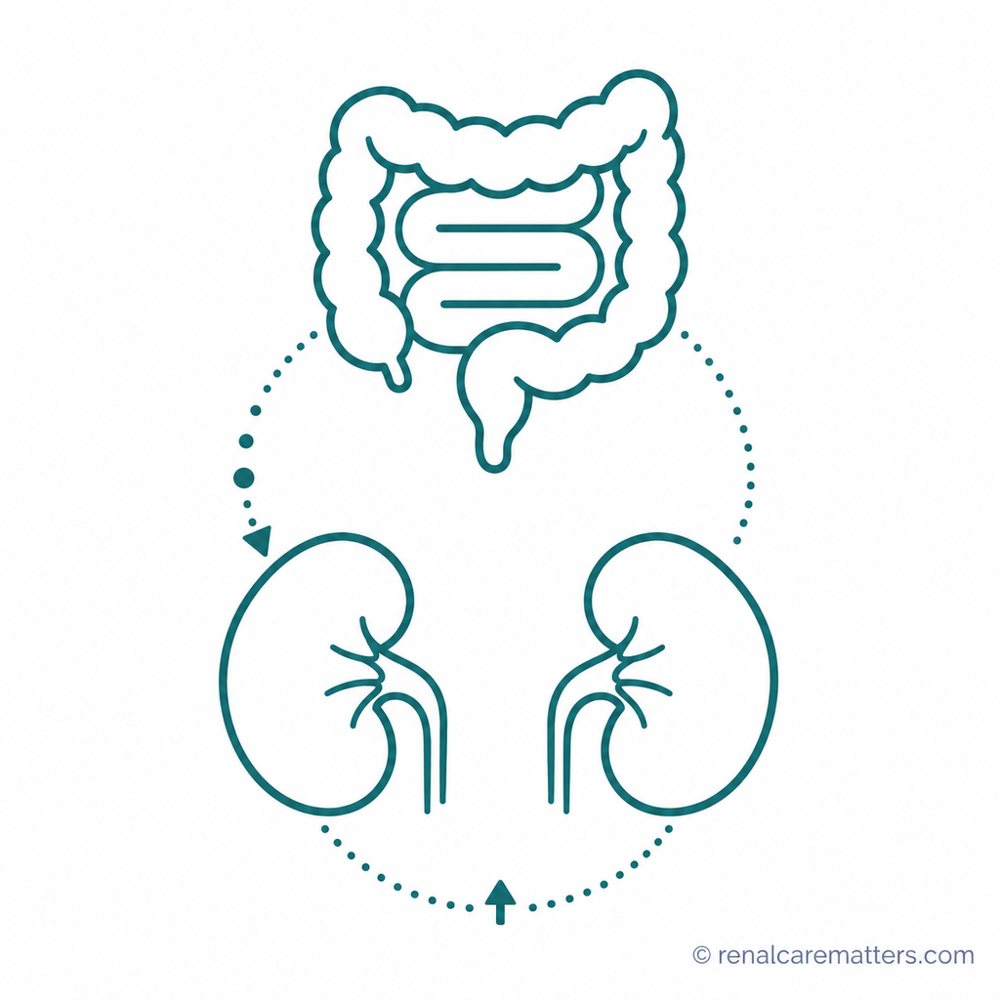
The gut–kidney axis as a two-way loop: the gut sends metabolites to the kidneys, and failing kidneys change the gut environment in return.
What each term means, and what it does not
The International Scientific Association for Probiotics and Prebiotics (ISAPP) consensus definitions all share one requirement that product labels often omit: a demonstrated health benefit. A product that contains bacteria is not a probiotic until a benefit has been shown for that preparation at that dose.
| Term | Consensus definition | Clinical reading |
|---|---|---|
| Probiotic | Live microorganisms which, when administered in adequate amounts, confer a health benefit on the host (ISAPP 2014). | Effects are strain- and dose-specific. Colony-forming units (CFU) should be stated through end of shelf life. |
| Prebiotic | A substrate that is selectively utilized by host microorganisms conferring a health benefit (ISAPP 2017). | Inulin-type fructans and some resistant starches qualify; not every fiber is a prebiotic, and psyllium works mainly by water-holding and bulk. |
| Synbiotic | A mixture comprising live microorganisms and substrate(s) selectively utilized by host microorganisms that confers a health benefit on the host (ISAPP 2020). | Complementary synbiotics combine a probiotic and a prebiotic; synergistic ones pair a substrate with the co-administered organism. Each mixture needs its own evidence. |
| Postbiotic | A preparation of inanimate microorganisms and/or their components that confers a health benefit on the host (ISAPP 2021). | Purified metabolites alone are outside this definition. |
| Butyrate | A microbial metabolite, one of the short-chain fatty acids (SCFA); not a postbiotic. | No randomized kidney-outcome trial in CKD was identified in this review; sodium salts add sodium load. |
| Fermented food | Food made through desired microbial growth; may or may not contain live organisms at consumption. | A food, with sodium, potassium and phosphorus content that matters more in CKD than its microbial count. |
The gut–kidney pathway, step by step
Normal function. Carbohydrate that escapes small-bowel digestion reaches the colon, where saccharolytic bacteria ferment it to acetate, propionate and butyrate. Butyrate is the principal fuel of colonocytes and supports tight-junction integrity. Protein that reaches the colon is fermented as well: bacterial tryptophanase converts tryptophan to indole, and tyrosine and phenylalanine yield p-cresol. Indole is sulfated in the liver to IS; p-cresol is conjugated, largely in the colonic mucosa and liver, to PCS. Both circulate more than 90% bound to albumin, so glomerular filtration clears little; the kidney removes them mainly by proximal tubular secretion through organic anion transporters.
What CKD changes. As tubular secretory capacity falls, IS and PCS accumulate. At the same time urea diffuses into the gut lumen, where bacterial urease generates ammonia and raises luminal pH; transit slows; and dietary restriction of fruit, vegetables and legumes reduces fermentable substrate. The net shift is from saccharolytic toward proteolytic fermentation. A 2026 meta-analysis of 21 studies (9,661 participants) found lower circulating acetate and propionate in adults with CKD than in controls, with the largest deficits in patients receiving hemodialysis (HD); these are cross-sectional comparisons and do not establish that SCFA depletion drives progression.
Where the causal chain is still open. In observational cohorts higher IS and PCS concentrations are associated with cardiovascular events and mortality, and in experimental models they promote tubular injury and fibrosis. Whether lowering them improves outcomes in people is the unproven step. The clearest test so far used an adsorbent rather than a supplement: in the Evaluating Prevention of Progression in CKD (EPPIC) trials, 2,035 adults with moderate to severe CKD received an oral spherical carbon adsorbent (AST-120) or placebo, and time to dialysis, transplantation or creatinine doubling did not differ (EPPIC-1 hazard ratio 1.03, 95% CI 0.84–1.27; EPPIC-2 hazard ratio 0.91, 95% CI 0.74–1.12). Adherence and slower-than-expected progression limit that result, but it is a caution against treating a solute concentration as a surrogate for kidney outcomes.
Reading solute measurements
Systemic exposure is described by plasma concentration, ideally reporting free and total fractions, because protein binding changes with albumin and competing ligands. A spot urinary concentration depends on urine dilution, production and remaining secretory capacity at once; it cannot establish production or systemic exposure. Stool composition, BUN and toxin levels are intermediate outcomes. Sustained GFR loss, kidney failure and recovery after AKI are the outcomes that carry a recommendation.
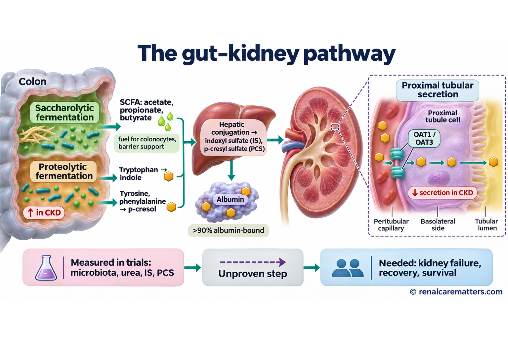
The gut–kidney pathway. Fiber fermentation yields short-chain fatty acids; protein fermentation yields precursors that the liver conjugates and the proximal tubule secretes. The bottom row separates what trials have measured (intermediate outcomes) from what patients need (kidney failure, recovery, survival).
- IS
- Indoxyl sulfate
- PCS
- p-Cresyl sulfate
- SCFA
- Short-chain fatty acid
- OAT
- Organic anion transporter
- GFR
- Glomerular filtration rate
Stable nondialysis CKD: three trials that do not agree
The 2023 Cochrane review remains the anchor: 45 randomized controlled trials (RCT) with 2,266 participants across CKD stages, dialysis and transplantation, in which no two studies tested the same formulation, and certainty was very low for kidney function and for patient-important outcomes. Adverse events were uncommon and mild. Three trials published around or after that search illustrate why the evidence resists pooling.
RCT Saleh et al., Scientific Reports 2026: Lactobacillus plantarum in CKD G3–G4
- Design
- Single center (Mansoura, Egypt), double-blind, placebo-controlled; 72 randomized (37 probiotic, 35 placebo); six months; all 72 analyzed.
- Intervention
- 1010 CFU once daily of a commercial L. plantarum product; no strain designation reported. Placebo: microcrystalline cellulose.
- Baseline
- Median eGFR 30.8 vs 31.7 mL/min/1.73 m² (creatinine, CKD-EPI 2021); about 40% with diabetes; 86.5% vs 94.3% on stable renin–angiotensin system blockade.
- Primary
- Median change in eGFR +4.85 (interquartile range 2.86 to 7.78) vs −1.5 (−6.26 to 0) mL/min/1.73 m². Baseline-adjusted difference at six months 7.72 mL/min/1.73 m² (95% CI 5.63–9.82).
- Secondary
- Serum creatinine −0.3 vs +0.1 mg/dL. Measured 24-hour creatinine clearance (CrCl) +7.8 vs −4.9 mL/min. Progression composite (at least 25% eGFR decline or creatinine doubling) 0 of 37 vs 3 of 35, P = 0.11. Twenty-four-hour proteinuria rose in both arms (0.45 to 0.82 and 0.40 to 1.09 g/day; between-group P = 0.19). Spot urinary IS did not differ and did not correlate with eGFR change.
- Limits
- Creatinine-only filtration markers; no cystatin C or measured GFR; no microbiome, inflammatory or plasma solute data; no adverse events and no dropouts reported in either arm; unreplicated.
RCT SYNERGY II, Nutrients 2021: synbiotic in CKD G3–G4
- Design
- Double-blind feasibility RCT, 12 months; 68 randomized (35 synbiotic, 33 placebo); retention 80% vs 85%.
- Kidney
- Exploratory: eGFR lower by 3.14 mL/min/1.73 m² (95% CI −6.23 to −0.06) and serum creatinine higher by 20.8 µmol/L (95% CI 2.97–38.5) with synbiotic.
- Solutes
- No between-group difference in serum IS or PCS despite enrichment of Bifidobacterium and Blautia.
- Reading
- Powered for feasibility, not efficacy or harm. A signal to respect, not a proven harm.
RCT Headley et al., Journal of Renal Nutrition 2025: resistant starch in CKD G3a–G4
- Design
- Double-blind, placebo-controlled; 68 randomized; 16 weeks of high-amylose maize resistant starch.
- Solutes
- PCS fell at week 16; IS, inflammatory and vascular markers were unchanged.
- Microbiota
- Alpha diversity decreased alongside the fall in PCS: a lower solute level did not track with a “more diverse” microbiome.
- Reading
- Intermediate endpoint only. No progression outcome.
Why might the 2026 trial and SYNERGY II differ? They tested different interventions (a single species versus a multi-strain synbiotic with fermentable fiber), for different durations, in different health systems, and both are small. Neither used a filtration marker independent of creatinine. That matters here more than usual, because the intervention acts on the gut, and the gut is a route of creatinine elimination: in advanced CKD a meaningful fraction of creatinine is degraded by intestinal bacteria. A product that changed bacterial creatinine handling, dietary intake or muscle mass could move serum creatinine without changing true GFR. The Egyptian investigators argue against this, noting stable body weight and a concordant rise in CrCl, but their urinary creatinine excretion was reconstructed from CrCl and serum creatinine and so is not an independent check. This is a mechanistic hypothesis, not a demonstrated bias; cystatin C or measured GFR would settle it.
Is the size of the effect plausible? A within-arm rise of about 5 mL/min/1.73 m² from a baseline near 31 in six months is unusual in progressive CKD. Therapies with proven kidney protection slow the rate of decline; they do not typically raise eGFR, and several produce an initial dip. A near-doubling of proteinuria in both arms over the same six months also sits uneasily beside improving filtration. None of this invalidates the trial. It does mean the finding should be treated as hypothesis-generating until an independent, multicenter trial with a creatinine-independent marker and a sustained endpoint reproduces it.
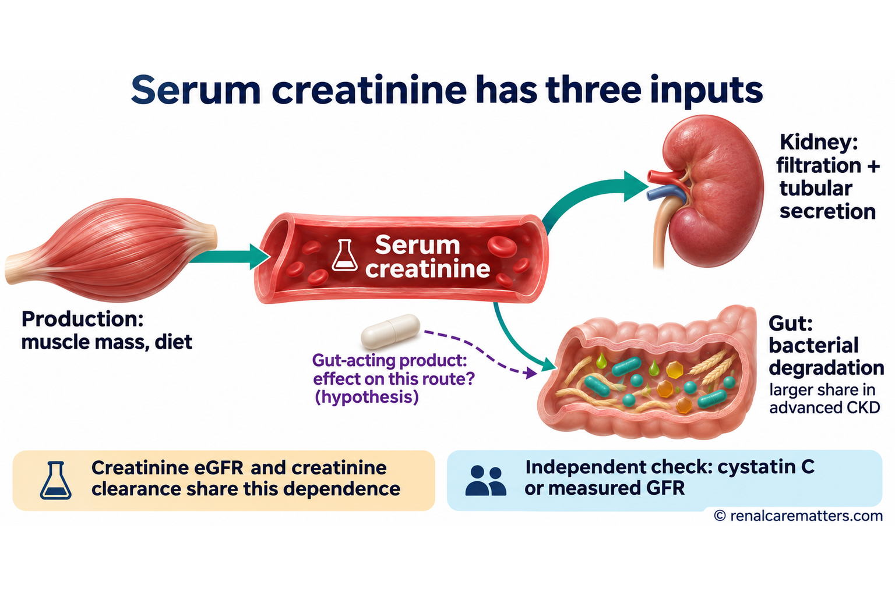
Why a creatinine change needs confirmation when the intervention acts on the gut. Serum creatinine reflects production, kidney removal and a gut route that enlarges in advanced CKD. The dashed arrow is a hypothesis, not a demonstrated effect; cystatin C or measured GFR is the independent check.
- CKD
- Chronic kidney disease
- GFR
- Glomerular filtration rate
- eGFR
- Estimated glomerular filtration rate
Other signals from 2014 to 2026
| Study | Population and intervention | Result | Reading |
|---|---|---|---|
| SYNERGY, 2016 RCT | 37 adults, eGFR 24 ± 8; crossover synbiotic | Serum PCS −14 µmol/L (95% CI −27 to −2); IS not significantly changed; albuminuria +38 mg/24 h | Solute endpoint; larger effect in those not given antibiotics |
| Leelahavanichkul, 2025 RCT | Nondialysis CKD G3–G5; Lacticaseibacillus rhamnosus L34 or GG vs placebo, 4 weeks | Lower inflammatory markers and several gut-derived solutes; total IS unchanged | Short, biomarker-only |
| Fiber meta-analyses, 2021 and 2025 Systematic review | 10 RCTs (292 patients) and 21 RCTs (700 patients), dialysis and nondialysis | Standardized mean difference (SMD) for IS −0.55 and PCS −0.47 (2021); −0.34 and −0.22 (2025); BUN also lower | Small, short trials; solutes only; no hard outcomes |
| Probiotic or synbiotic meta-analysis, 2024 Systematic review | 21 RCTs in CKD, including dialysis | BUN SMD −0.23 (95% CI −0.41 to −0.04); C-reactive protein SMD −0.34 | SMD is unitless; BUN reflects intake, catabolism and volume as well as clearance |
| Fecal microbiota transplantation (FMT) pilot, 2024 RCT | 28 adults, CKD stages 2–4; oral FMT capsules vs placebo, 6 months | Fewer patients progressed (13.3% vs 53.8%) | Very small; not a supplement; research setting only |
| Lubiprostone phase 2, 2025 RCT | 150 adults, CKD G3b–G4, Japan; 8 or 16 µg vs placebo, 24 weeks | Primary endpoint (IS) unchanged; eGFR slope preserved at 16 µg (secondary) | A prescription secretagogue, not a supplement; shows that kidney signals can appear without solute change |
Network meta-analyses published in 2025 rank multi-strain mixtures highest for creatinine, urea or solute reduction. Rankings built from small, heterogeneous trials of different products describe which arm happened to do best, not which product to prescribe, and none addresses kidney failure.
Practice for nondialysis CKD
Do not prescribe a biotic to slow CKD. If a patient wishes to take one, record the product, dose and start date, repeat creatinine and urine albumin on the usual schedule, and interpret any change against the prior slope rather than a single value. Offer fiber for constipation or low intake. Keep the interventions with outcome evidence in front: blood pressure and glycemic control, renin–angiotensin system blockade, sodium–glucose cotransporter 2 (SGLT2) inhibition and the other therapies recommended by Kidney Disease: Improving Global Outcomes (KDIGO) 2024.
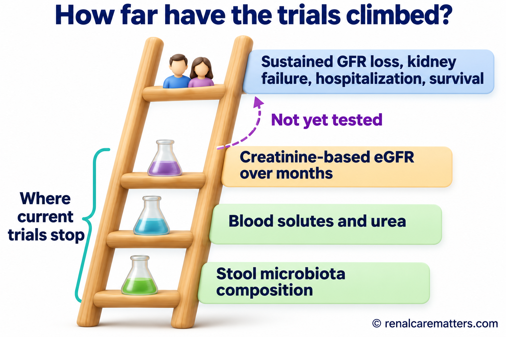
An outcome ladder. Most trials of gut-directed supplements stop at microbiota composition or solute levels; a few report short-term creatinine-based eGFR. None has reached the top rung of kidney failure, hospitalization or survival.
- eGFR
- Estimated glomerular filtration rate
- GFR
- Glomerular filtration rate
Fiber: the best-supported use, for a bowel goal
Why fiber intake is low in CKD. Potassium and phosphorus restriction steers patients away from fruit, vegetables, legumes and whole grains, while fluid limits, phosphate binders, oral iron, opioids and inactivity slow transit. Constipation is the predictable result.
What the evidence supports. In a meta-analysis of 10 cohort studies (19,843 patients with CKD), higher dietary fiber intake was associated with lower all-cause mortality (hazard ratio 0.80, 95% CI 0.58–0.97). This is an observational association; people who eat more fiber differ in overall diet quality, appetite and illness severity, and residual confounding is likely. A meta-analysis of 14 controlled feeding trials (143 participants) found that added fiber lowered serum urea by 1.76 mmol/L, again an intermediate measure. KDIGO 2024 advises, as an ungraded practice point, a healthy and diverse diet with a higher proportion of plant-based foods; neither KDIGO nor the Kidney Disease Outcomes Quality Initiative (KDOQI) 2020 nutrition guideline sets a numeric fiber target for CKD. For symptoms, the joint American Gastroenterological Association (AGA) and American College of Gastroenterology (ACG) 2023 guideline on chronic idiopathic constipation (CIC) suggests fiber supplementation (conditional recommendation, low certainty of evidence), notes that among the fibers evaluated only psyllium appears effective, and recommends polyethylene glycol (PEG) (strong recommendation, moderate certainty).
Constipation itself is associated with kidney outcomes: in 3.5 million United States veterans with eGFR of at least 60 mL/min/1.73 m², constipation was associated with incident CKD (hazard ratio 1.13, 95% CI 1.11–1.14) and kidney failure (hazard ratio 1.09, 95% CI 1.01–1.18). Constipation here was defined by diagnostic codes and laxative use, and comorbidity, medicines and frailty are plausible confounders. The finding motivates trials; it does not show that treating constipation protects kidneys.
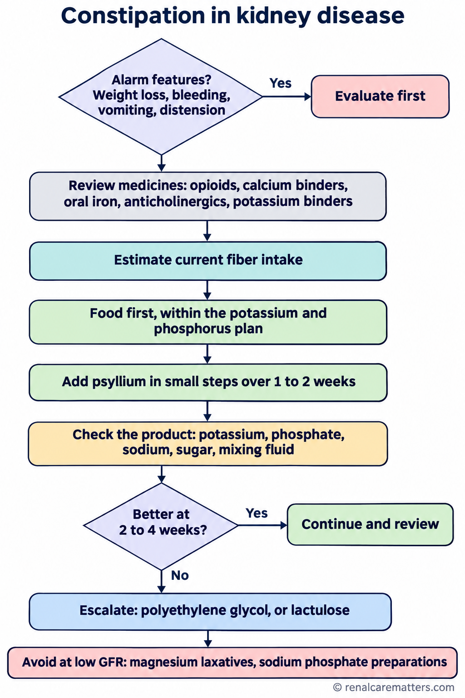
Constipation in kidney disease: a stepwise pathway from alarm features and medicine review, through food and fiber, to kidney-safe laxatives and reassessment.
- PEG
- Polyethylene glycol
- GFR
- Glomerular filtration rate
Hemodialysis and peritoneal dialysis: surrogate endpoints, labeled by modality
Dialysis populations differ from nondialysis CKD in the questions that matter: residual kidney function, interdialytic weight gain, mineral balance and infection risk. Evidence should not be carried across that line, nor between HD and peritoneal dialysis (PD).
| Modality and study | Intervention | Finding | What it does not show |
|---|---|---|---|
| HD: Sirich, 2014 RCT | Fermentable fiber (resistant starch) vs control starch, 6 weeks | Free plasma IS −29% vs −0.4% (P = 0.02); free PCS not significant | Symptoms, hospitalization, survival |
| HD: Natarajan, 2014 RCT | Three-strain commercial probiotic, crossover | No significant change in solutes or quality of life; 22 completed | Efficacy; underpowered |
| HD: Saad, 2026 RCT | L. plantarum 1010 CFU twice daily, or with 3 g oat β-glucan, vs standard care; 60 patients, 24 weeks, single-blind | Triceps skinfold +3.3 and +4.7 mm vs 0.0; body mass index rose more; albumin and normalized protein catabolic rate not different between groups | Function, admissions; single-blind with a standard-care comparator, same center as the 2026 CKD trial |
| HD: Autran, 2027 (online 2026) RCT | Probiotic vs placebo, 40 patients, 6 months, triple-blind | Serum zonulin unchanged (primary); phosphorus fell more with probiotic (secondary, P = 0.011) | A phosphate-lowering effect: single small trial, secondary endpoint |
| HD: Ahmed, 2026 Systematic review | 9 RCTs, 878 patients; biotics and anemia | Hemoglobin mean difference 0.56 g/dL (95% CI −0.21 to 1.32), not significant; low certainty | Any reason to use biotics for anemia |
| PD: Wang, 2015 RCT | Four-strain probiotic vs placebo, 6 months; 39 completed | Lower serum endotoxin and proinflammatory cytokines | Peritonitis, technique survival |
| PD: Zhou, 2024 RCT | Lactobacillus paracasei N1115 with fructooligosaccharide vs placebo, 12 weeks; 57 patients | Microbiota composition changed; fecal SCFA not significantly different | Any clinical endpoint |
| PD: He, 2022 RCT | Inulin-type prebiotic, crossover; 16 completed | Serum uric acid about 10% lower | Gout, residual function |
Direct PD evidence is sparse and limited to biomarkers. No trial in either modality has examined preservation of residual kidney function, dialysis adequacy, peritonitis, hospitalization or survival.
Checks before a dialysis patient starts a product
Volume of mixing fluid against the prescribed allowance; potassium, phosphate and sodium in the ingredient list, including “phos” additives and potassium salts; interaction with binder timing; and immune status and catheter access for live-organism products. In PD, treat constipation actively, because a loaded colon impairs catheter drainage; choose PEG or lactulose rather than magnesium or phosphate preparations.
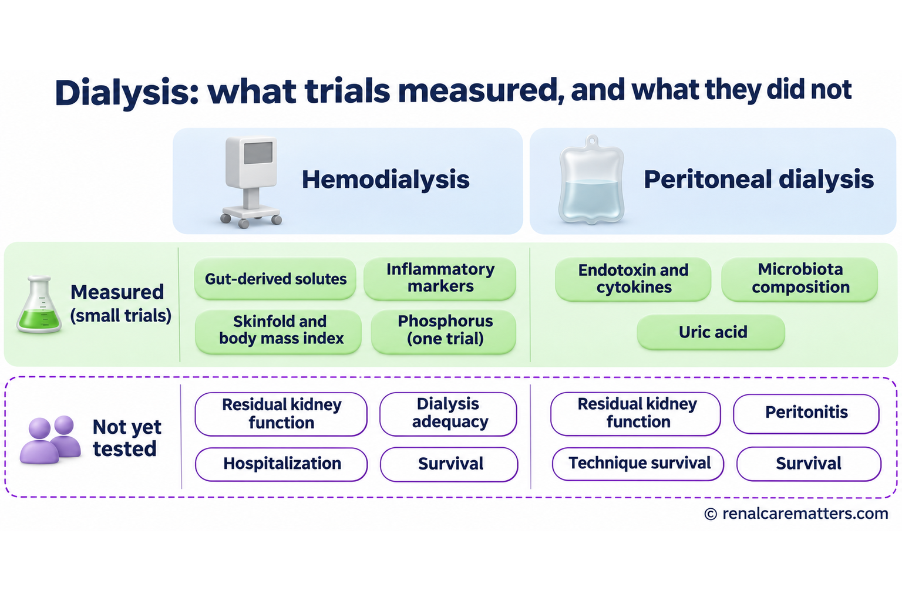
What dialysis trials of gut-directed supplements have measured (upper band) and what remains untested (lower band), shown separately for hemodialysis and peritoneal dialysis.
- HD
- Hemodialysis
- PD
- Peritoneal dialysis
Active AKI and recovery: a neutral trial and a safety signal
Experimental AKI alters the microbiota within days, and germ-free and antibiotic-treated animals differ in their injury response. That biology has been tested once in a randomized human trial. Chávez-Íñiguez and colleagues randomized 92 adults with sepsis-associated AKI to a probiotic or placebo for seven days. Kidney function recovery did not differ (hazard ratio 0.93, 95% CI 0.52–1.68), nor did the need for kidney replacement therapy (KRT), urine volume or adverse events. Urea fell within the probiotic arm (154 to 80 mg/dL) and less so with placebo (130 to 109 mg/dL); a within-arm change in urea is not a between-arm clinical benefit, and urea falls with reduced catabolism and nitrogen intake as well as with recovery. The confidence interval is wide: the trial excludes neither a moderate benefit nor a moderate harm.
No randomized evidence was identified for postsurgical or contrast-associated AKI, or for preventing the transition from AKI to CKD.
The safety context is specific to critical illness. In PROSPECT, 2,650 mechanically ventilated adults in an intensive care unit (ICU) received Lacticaseibacillus rhamnosus GG or placebo. Ventilator-associated pneumonia (VAP) was not reduced (21.9% vs 21.3%; hazard ratio 1.03, 95% CI 0.87–1.22), and the study organism was isolated from a sterile site, or as the sole or predominant organism from a nonsterile site, in 15 patients receiving the probiotic versus 1 receiving placebo (odds ratio 14.02, 95% CI 1.79–109.58). That is roughly 11 versus 1 per 1,000, or about one additional isolate for every 94 patients treated. Whole-genome sequencing in a separate ICU series confirmed that blood isolates were clonal with the administered capsule. Patients with AKI in the ICU frequently have central venous or dialysis catheters, gut ischemia and immune dysfunction, which is the setting in which translocation is most plausible.
Do not read eGFR during evolving AKI
Creatinine-based eGFR assumes steady state. While creatinine is rising or falling it misstates filtration in the direction of the lag, so neither a supplement’s apparent benefit nor its apparent harm can be inferred from it. Follow the creatinine trajectory, urine output and volume status, stage by KDIGO criteria, and arrange structured post-AKI follow-up.
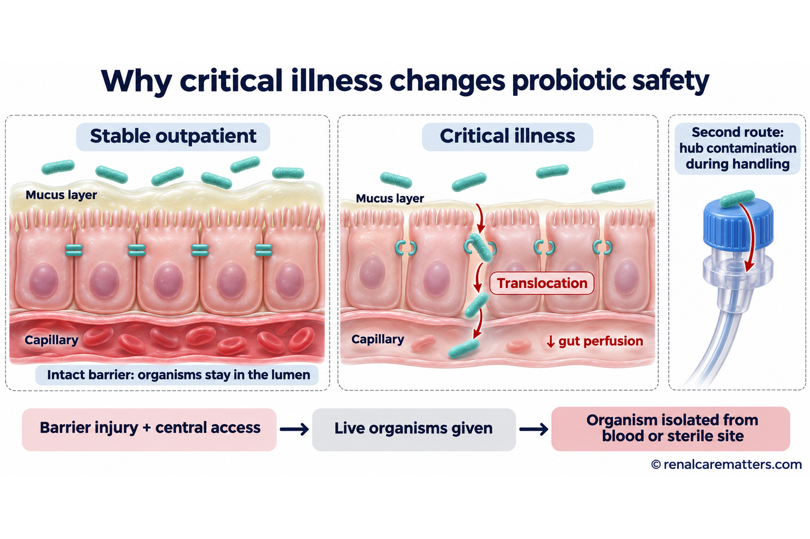
Why critical illness changes the safety of live-organism products: a compromised gut barrier and central venous access give administered organisms two routes into the bloodstream.
- ICU
- Intensive care unit
People without CKD: three different questions
Asymptomatic wellness. No trial shows that a biotic prevents CKD. A systematic review of seven RCTs in healthy adults found no effect of probiotics on fecal microbiota alpha diversity, richness or evenness versus placebo, and only one trial reported a change in overall community structure. An international consensus on microbiome testing found insufficient evidence to recommend such tests for routine clinical decisions; a commercial sequencing report should not be used to select a “kidney” supplement.
Constipation. The AGA–ACG recommendations above apply. In patients with type 2 diabetes, CKD and constipation, the single-arm BIRDIE study (30 patients, 12 weeks, Bifidobacterium bifidum G9-1) reported more normal stool form (3.3% to 44.8%) with unchanged eGFR; without a control arm this cannot separate drug effect from regression to the mean or expectation.
Antibiotic recipients. The 2025 Cochrane update (47 trials, 15,260 participants) is the strongest body of evidence for any probiotic indication discussed here, and it still carries low certainty for its main outcomes.
| Outcome (Cochrane 2025) | Probiotic | Control | Relative effect | Certainty |
|---|---|---|---|---|
| CDAD, 38 trials, 13,179 participants | 110 / 6,787 (1.6%) | 203 / 6,392 (3.2%) | Risk ratio 0.50 (95% CI 0.38–0.64) | Low |
| Antibiotic-associated diarrhea (AAD), 40 trials, 13,419 participants | 1,592 / 6,901 (23.0%) | 1,787 / 6,518 (27.4%) | Risk ratio 0.67 (95% CI 0.57–0.78) | Low |
| Any adverse event, 37 trials, 11,911 participants | 669 / 6,148 (10.9%) | 701 / 5,763 (12.2%) | Risk ratio 0.86 (95% CI 0.72–1.01) | Moderate |
For CDAD the absolute risk reduction (ARR) is about 16 per 1,000, a number needed to treat (NNT) of 65 (95% CI 48–97) at the pooled control risk of 3.2%. Baseline risk drives everything: the same relative effect applied to a control risk of 0.5%, typical of a low-risk outpatient course, would prevent about 2 to 3 cases per 1,000 (NNT near 400), and an earlier version of the same review found the benefit concentrated in trials whose control risk exceeded 5%. The review restricts its conclusion to patients who are not immunocompromised.
Where guidelines disagree, and why
The AGA 2020 guideline conditionally suggests specific preparations (Saccharomyces boulardii, or defined two-, three- and four-strain combinations) over none for CDAD prevention in antibiotic recipients, on low-quality evidence, and adds that patients who value avoiding cost or potential harm, or who are at low risk, may reasonably decline. The ACG 2021 guideline recommends against probiotics for primary prevention (conditional recommendation, moderate quality of evidence) and for prevention of recurrence (strong recommendation, very low quality). The two bodies read the same trials differently: the AGA and Cochrane accept pooled estimates across preparations, whereas the ACG gives more weight to large negative trials and objects to pooling different strains. Neither addresses CKD or dialysis specifically, and prevention is distinct from treatment of suspected infection, which needs testing and antimicrobial therapy.
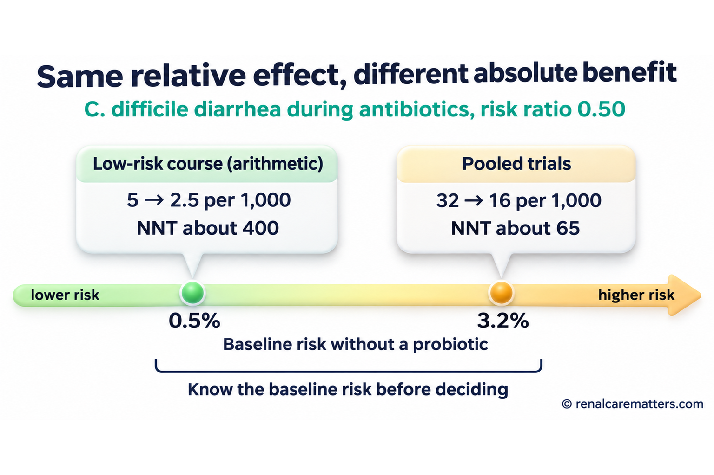
The same risk ratio gives very different absolute benefit as baseline risk changes. The 3.2% point is the pooled trial result; the 0.5% point is arithmetic applied to a lower-risk setting.
- NNT
- Number needed to treat
- CDAD
- Clostridioides difficile-associated diarrhea
Trial benefit explorer: events per 1,000
Relative effects travel between populations better than absolute ones, but patients experience absolute risk. This read-only explorer shows the published event counts for six analyses cited in this guide, converted to events per 1,000, with the published effect measure beside them. Each analysis keeps its own population, follow-up and endpoint; they are not comparable with one another.
| Arm | Events per 1,000 | Source counts |
|---|
Clinician illustration: apply the CDAD risk ratio to a different baseline risk
Enter a baseline risk to see the arithmetic.
Arithmetic only: modeled risk = baseline × 0.50, with the range from the published 95% CI (0.38–0.64). It assumes the pooled risk ratio holds at the baseline you enter and for the preparation in question, which the trials do not establish. It is not an individual prediction or a product recommendation. Nothing you type is stored or sent.
Who needs review, and what a label must show
In CKD trials adverse events were infrequent and mild: flatulence, nausea, diarrhea and abdominal pain. They were also poorly reported, and trials excluded the patients at highest risk. The concerns below follow from physiology and from the critical-care data rather than from CKD-specific harm estimates.
| Situation | Why it matters | Action |
|---|---|---|
| Kidney transplant or other immunosuppression | Impaired clearance of translocated organisms; trials largely excluded these patients | Clinician review before any live-organism product; prefer nonviable or dietary approaches |
| Central venous catheter, including tunneled dialysis catheters | Bloodstream access; capsule contents can contaminate hubs during handling | Avoid opening capsules near the line; review indication |
| Critical illness, active AKI, severe pancreatitis, gut ischemia or short bowel | Barrier compromise; PROSPECT isolates | Do not start outside a protocol |
| Hyperkalemia, hyperphosphatemia or fluid restriction | Excipients and mixing volume | Read ingredients; count fluid; recheck laboratory values |
| Unidentified product or unnamed strain | Cannot be matched to evidence or to a quality standard | Do not endorse; advise against substitution between brands |
Label minimum. Genus, species and strain designation; viable count per serving, ideally at end of shelf life; serving size; storage conditions; expiry; full excipient list; and a manufacturer who can be contacted. For fibers: the fiber type and grams per serving.
Philippine context. Most of these products are registered with the Philippine Food and Drug Administration (FDA) as food supplements rather than as drugs, and supplement labeling carries a notice that the product is not a medicine and is not for treating disease. Registration can be checked on the FDA verification portal; it confirms that a product may be marketed, not that it works. Availability, price and formulation change, so this guide names no brand as equivalent to a trial product. Document supplements in the medication list and ask about them at every reconciliation, including items bought online.

A triage pathway for live-organism products: who should not start, who needs clinician review, and what to check before proceeding for a defined goal.
- AKI
- Acute kidney injury
Clinical pearls
- A fall in BUN, IS or PCS shows that a product did something biological. It is not evidence that the patient will avoid dialysis.
- When an intervention acts on the gut, confirm any creatinine change with cystatin C before calling it a change in GFR.
- Interpret one creatinine against the patient’s prior slope. A single value cannot be attributed to a supplement started in the same interval.
- Evidence is formulation-specific. A meta-analysis that pools different strains describes the category on average, not the bottle in the patient’s hand.
- Psyllium and PEG have guideline support for constipation; magnesium and phosphate laxatives are the ones to avoid at low GFR.
- In the ICU, a probiotic has a measurable harm and no demonstrated benefit for pneumonia or, in one small trial, for AKI recovery.
- For CDAD prevention, the absolute benefit scales with baseline risk; say the number per 1,000 for the patient in front of you.
- The most common harm of a kidney supplement is opportunity cost: money and attention diverted from therapies with outcome evidence.
Evidence review, research watch and open items
Search. PubMed was searched on November 22, 2026, combining chronic kidney disease, dialysis or acute kidney injury with probiotic, prebiotic, synbiotic, postbiotic, resistant starch, inulin, butyrate, dietary fiber, fecal microbiota transplantation and lubiprostone, limited to randomized trials and meta-analyses, with a separate search for antibiotic-associated and C. difficile diarrhea. This is a targeted scan, not a systematic review. Quantitative claims were checked against the PubMed abstract or, for the 2026 CKD trial, the open-access full text; guideline grades were checked against the guideline or its published recommendation table.
What this review added to the working blueprint. The 2026 CKD trial’s Table 2 was extracted in full: the placebo-arm change, the baseline-adjusted between-group difference with its confidence interval, CrCl, proteinuria and the progression counts now appear above. The antibiotic section reports AAD and adverse events beside CDAD, with crude counts. Added evidence includes the 2026 SCFA meta-analysis, the 2025 fiber meta-analysis, the 2025 lubiprostone trial, the 2024 FMT pilot, the 2025 L. rhamnosus trial, the 2026 hemodialysis zonulin trial, three PD trials, the constipation–CKD cohort and the BIRDIE study.
Open items for clinical sign-off. (1) The 2026 CKD paper states prospective registration on May 13, 2025, with enrollment from May to November 2025; the registry record and its version history could not be opened during this review and should be compared with the publication before the trial is cited further. (2) The Cochrane 2025 abstract reports an ARR for AAD of 9%, whereas the crude difference between the pooled arms is 4.3 percentage points; the explorer shows the crude counts and labels them as such. (3) Strain identifiers for the 2026 trials were not reported in the papers. (4) Composition details of the SYNERGY II synbiotic should be confirmed from the full text before any product comparison is drawn.
Research watch. Replication of the L. plantarum finding with cystatin C or measured GFR; trials with sustained endpoints (40% or greater eGFR decline, kidney failure); adequately powered AKI trials outside sepsis; PD trials with peritonitis and residual function endpoints; and postbiotic or butyrate trials with clinical outcomes. No commercial ties to any supplement manufacturer are held by this site.